Before: the stripped-down copy revision at commit 3ba90d9. After: the approved components from d4615c5, with document passages fitted into those layouts. Screenshots use identical viewports: 1440 pixels on desktop and 390 pixels on mobile.
The user explicitly retained Jason's newer approved figures: $300M+ in results, 50+ million-dollar recoveries, and the newer major case results. 28 older result entries in the document are therefore superseded and identified below. The confirmed Ernest Buonocore profile and approved design labels remain. Document prose, metadata and form fields are verified literally. Editorial notes and unfinished placeholders remain excluded.
Approved design reference
These captures show the design before the copy-only revision, used as the restoration reference.
Approved desktop homepage · Approved mobile homepage · Approved attorneys page
index.html
88 source entries match exactly. 7 older result entries are superseded by the newer approved figures.
Desktop screenshots
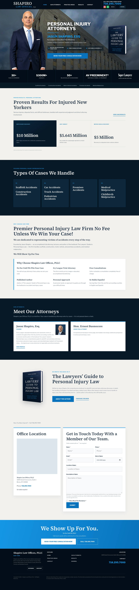
Mobile screenshots
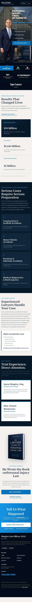
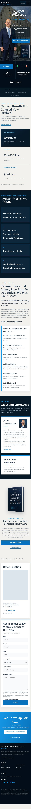
Actual before and after wording
| Before: copy-only revision 3ba90d9 | After: approved design restored | ||||
|---|---|---|---|---|---|
| f | 1 | Personal Injury Attorneys | f | 1 | Personal Injury Attorneys |
| n | 2 | No Fee Unless We Win Your Case! | n | 2 | Jason Shapiro, Esq |
| 3 | Ivy League–Educated Trial Attorney | 3 | Ivy League–Educated Trial Attorney | ||
| 4 | Author of The Lawyers’ Guide to Personal Injury Law | 4 | Author of The Lawyers’ Guide to Personal Injury Law | ||
| n | 5 | Super Lawyers Selectee | n | 5 | No Fee Unless We Win Your Case! |
| 6 | Martindale-Hubbell AV Preeminent | 6 | Free Consultations | ||
| 7 | ★ Se Habla Español ★ | 7 | ★ Se Habla Español ★ | ||
| n | n | 8 | Book Your Free Consultation Now | ||
| 8 | 9 | ||||
| 9 | Scaffold Accidents | 10 | Scaffold Accidents | ||
| 12 | Premises Accidents | 13 | Premises Accidents | ||
| 13 | Medical Malpractice | 14 | Medical Malpractice | ||
| n | n | 15 | Proven Results. Personal Attention. | ||
| 14 | Proven Results For Injured New Yorkers | 16 | Proven Results For Injured New Yorkers | ||
| n | n | 17 | Serious injuries, disputed facts, and difficult defenses, handle | ||
| > | d with experienced judgment and direct attorney involvement. | ||||
| 15 | View Case Results | 18 | View Case Results | ||
| n | 16 | $5,645,000 | n | 19 | Birth-injury recovery for a child who sustained serious harm. |
| 17 | Jury Verdict | 20 | Jury verdict for a passenger ejected in a motor-vehicle crash. | ||
| 18 | $4,000,000 | 21 | Recovery in a disputed motor-vehicle collision. | ||
| 19 | Settlement | 22 | Attorney Advertising. Prior results do not guarantee a similar o | ||
| > | utcome. | ||||
| 20 | $3,000,000 | 23 | Focused Personal Injury Representation | ||
| 21 | $2,500,000 | 24 | Types Of Cases We Handle | ||
| 22 | $2,100,000 | 25 | 01 Scaffold Accidents Construction Accidents | ||
| 26 | Scaffold Accidents | ||||
| 27 | Construction Accidents | ||||
| 28 | 02 Car Accidents Truck Accidents Pedestrian Accidents | ||||
| 29 | Car Accidents | ||||
| 30 | Truck Accidents | ||||
| 31 | Pedestrian Accidents | ||||
| 32 | 03 Premises Accidents | ||||
| 33 | Premises Accidents | ||||
| 34 | 04 Medical Malpractice Childbirth Malpractice | ||||
| 35 | Medical Malpractice | ||||
| 36 | Childbirth Malpractice | ||||
| 37 | Why Choose Our Firm | ||||
| 23 | Premier Personal Injury Law Firm No Fee Unless We Win Your Case! | 38 | Premier Personal Injury Law Firm No Fee Unless We Win Your Case! | ||
| 24 | We are dedicated to representing victims of accidents every step | 39 | We are dedicated to representing victims of accidents every step | ||
| > | of the way. | > | of the way. | ||
| 25 | Founded by Jason Shapiro — an accomplished trial attorney, lectu | 40 | Founded by Jason Shapiro — an accomplished trial attorney, lectu | ||
| > | rer, and author of the textbook The Lawyers’ Guide to Personal I | > | rer, and author of the textbook The Lawyers’ Guide to Personal I | ||
| > | njury Law — the firm handles scaffold, construction, motor vehic | > | njury Law — the firm handles scaffold, construction, motor vehic | ||
| > | le, and premises accidents, and medical malpractice. | > | le, and premises accidents, and medical malpractice. | ||
| 26 | We Will Show Up For You | 41 | We Will Show Up For You | ||
| n | 27 | Types Of Cases We Handle | n | 42 | Why Choose Shapiro Law Offices, PLLC |
| 28 | Scaffold Accidents | 43 | You will not pay attorney’s fees unless we win your case | ||
| 29 | Construction Accidents | 44 | The firm is led by an Ivy League–educated, accomplished trial at | ||
| > | torney | ||||
| 30 | Car Accidents | 45 | Call or schedule a consultation completely free of charge | ||
| 31 | Truck Accidents | 46 | Author of The Lawyers’ Guide to Personal Injury Law, the textboo | ||
| > | k on accident and injury cases | ||||
| 32 | Pedestrian Accidents | 47 | A personal, hands-on approach to guide you through your difficul | ||
| > | t times | ||||
| 33 | Premises Accidents | 48 | Serving New York City and the surrounding counties in English an | ||
| > | d Spanish | ||||
| 34 | Medical Malpractice | 49 | Our Attorneys | ||
| 35 | Childbirth Malpractice | ||||
| 36 | Meet Our Attorneys | 50 | Meet Our Attorneys | ||
| 37 | Shapiro Law Offices, PLLC is a trial firm. Your case is handled | 51 | Shapiro Law Offices, PLLC is a trial firm. Your case is handled | ||
| > | by attorneys who try cases — it is not passed down a chain. | > | by attorneys who try cases — it is not passed down a chain. | ||
| 38 | Jason Shapiro, Esq | 52 | Jason Shapiro, Esq | ||
| n | 39 | Founder | n | ||
| 40 | An Ivy League–educated trial attorney who represents victims of | 53 | An Ivy League–educated trial attorney who represents victims of | ||
| > | accidents throughout New York City and the surrounding counties. | > | accidents throughout New York City and the surrounding counties. | ||
| > | He is a lecturer and the author of the textbook The Lawyers’ Gu | > | He is a lecturer and the author of the textbook The Lawyers’ Gu | ||
| > | ide to Personal Injury Law, a comprehensive guide for plaintiffs | > | ide to Personal Injury Law, a comprehensive guide for plaintiffs | ||
| > | ’ personal injury attorneys. | > | ’ personal injury attorneys. | ||
| 41 | He has been selected to Super Lawyers and holds Martindale-Hubbe | 54 | He has been selected to Super Lawyers and holds Martindale-Hubbe | ||
| > | ll’s AV Preeminent rating — the highest peer-review distinction | > | ll’s AV Preeminent rating — the highest peer-review distinction | ||
| > | for legal ability and ethical standards. | > | for legal ability and ethical standards. | ||
| 42 | View Profile | 55 | View Profile | ||
| n | n | 56 | Hon. Ernest Buonocore | ||
| 57 | An experienced trial lawyer, former judge, and mediator who brin | ||||
| > | gs a distinctive perspective to serious personal injury cases. | ||||
| 43 | He Wrote The Book On It | 58 | He Wrote The Book On It | ||
| 44 | The Lawyers’ Guide to Personal Injury Law | 59 | The Lawyers’ Guide to Personal Injury Law | ||
| 45 | Written by Jason Shapiro, this comprehensive textbook for plaint | 60 | Written by Jason Shapiro, this comprehensive textbook for plaint | ||
| > | iffs’ personal injury attorneys discusses, in depth, the handlin | > | iffs’ personal injury attorneys discusses, in depth, the handlin | ||
| > | g of all types of accident and injury-related cases. When other | > | g of all types of accident and injury-related cases. When other | ||
| > | lawyers want to learn how to handle an injury case, this is the | > | lawyers want to learn how to handle an injury case, this is the | ||
| > | book they turn to — and its author is the attorney who will hand | > | book they turn to — and its author is the attorney who will hand | ||
| > | le yours. | > | le yours. | ||
| n | n | 61 | About The Author | ||
| 46 | Purchase The Book | 62 | Purchase The Book | ||
| n | 47 | About The Author | n | ||
| 48 | Why Choose Shapiro Law Offices, PLLC | ||||
| 49 | No Fee Until We Win Your Case | ||||
| 50 | You will not pay attorney’s fees unless we win your case | ||||
| 51 | Ivy League Trial Attorney | ||||
| 52 | The firm is led by an Ivy League–educated, accomplished trial at | ||||
| > | torney | ||||
| 53 | Free Consultations | ||||
| 54 | Call or schedule a consultation completely free of charge | ||||
| 55 | Published Author | ||||
| 56 | Author of The Lawyers’ Guide to Personal Injury Law, the textboo | ||||
| > | k on accident and injury cases | ||||
| 57 | Personal Approach | ||||
| 58 | A personal, hands-on approach to guide you through your difficul | ||||
| > | t times | ||||
| 59 | Se Habla Español | ||||
| 60 | Serving New York City and the surrounding counties in English an | ||||
| > | d Spanish | ||||
| 61 | Have You Been Injured? ─ Call 718.295.7000 | 63 | Have You Been Injured? ─ Call 718.295.7000 | ||
| 62 | Office Location | 64 | Office Location | ||
| n | n | 65 | Phone: 718.295.7000 | ||
| 66 | 718.295.7000 | ||||
| 67 | Se habla español | ||||
| 63 | Get in Touch Today With a Member of Our Team. | 68 | Get in Touch Today With a Member of Our Team. | ||
| 64 | Fields marked with an “*” are required | 69 | Fields marked with an “*” are required | ||
| 72 | I Have Read The Disclaimer * | 77 | I Have Read The Disclaimer * | ||
| 73 | Submit | 78 | Submit | ||
| t | t | 79 | We Show Up For You. | ||
| 80 | Call now to speak with an attorney for a free consultation | ||||
| 81 | Book Your Free Consultation Now | ||||
| 82 | Call 718.295.7000 | ||||
Every source entry and its result
| Document paragraph | Role | Exact source text | Result |
|---|---|---|---|
| 44 | Page title (browser tab) | Personal Injury Attorneys - Shapiro Law Offices, PLLC | New York | Exact |
| 46 | Search-results description | Shapiro Law Offices, PLLC is a New York personal injury law firm representing accident victims. No fee unless we win. Call today for a free consultation: 718.295.7000. | Exact |
| 48 | Image description | Jason Shapiro, Esq. — New York personal injury attorney | Exact |
| 51 | Main headline | Personal Injury Attorneys | Exact |
| 53 | Paragraph | No Fee Unless We Win Your Case! | Exact |
| 55 | List item | Ivy League–Educated Trial Attorney | Exact |
| 57 | List item | Author of The Lawyers’ Guide to Personal Injury Law | Exact |
| 59 | List item | Super Lawyers Selectee | Exact |
| 61 | List item | Martindale-Hubbell AV Preeminent | Exact |
| 63 | Paragraph | ★ Se Habla Español ★ | Exact |
| 66 | List item | Scaffold Accidents | Exact |
| 68 | List item | Construction Accidents | Exact |
| 70 | List item | Motor Vehicle Accidents | Exact |
| 72 | List item | Premises Accidents | Exact |
| 74 | List item | Medical Malpractice | Exact |
| 77 | Section heading | Proven Results For Injured New Yorkers | Exact |
| 79 | Button | View Case Results | Exact |
| 81 | Heading | $5,645,000 | Newer approved result retained |
| 83 | Paragraph | Jury Verdict | Newer approved result retained |
| 85 | Heading | $4,000,000 | Newer approved result retained |
| 87 | Paragraph | Settlement | Newer approved result retained |
| 89 | Heading | $3,000,000 | Newer approved result retained |
| 91 | Heading | $2,500,000 | Newer approved result retained |
| 93 | Heading | $2,100,000 | Newer approved result retained |
| 96 | Section heading | Premier Personal Injury Law Firm No Fee Unless We Win Your Case! | Exact |
| 98 | Small heading | We are dedicated to representing victims of accidents every step of the way. | Exact |
| 100 | Paragraph | Founded by Jason Shapiro — an accomplished trial attorney, lecturer, and author of the textbook The Lawyers’ Guide to Personal Injury Law — the firm handles scaffold, construction, motor vehicle, and premises accidents, and medical malpractice. | Exact |
| 102 | Small heading | We Will Show Up For You | Exact |
| 105 | Section heading | Types Of Cases We Handle | Exact |
| 107 | Heading | Scaffold Accidents | Exact |
| 109 | Heading | Construction Accidents | Exact |
| 111 | Heading | Car Accidents | Exact |
| 113 | Heading | Truck Accidents | Exact |
| 115 | Heading | Pedestrian Accidents | Exact |
| 117 | Heading | Premises Accidents | Exact |
| 119 | Heading | Medical Malpractice | Exact |
| 121 | Heading | Childbirth Malpractice | Exact |
| 124 | Section heading | Meet Our Attorneys | Exact |
| 126 | Paragraph | Shapiro Law Offices, PLLC is a trial firm. Your case is handled by attorneys who try cases — it is not passed down a chain. | Exact |
| 128 | Image description | Jason Shapiro, Esq. — New York personal injury attorney | Exact |
| 130 | Heading | Jason Shapiro, Esq | Exact |
| 132 | Paragraph | Founder | Exact |
| 134 | Paragraph | An Ivy League–educated trial attorney who represents victims of accidents throughout New York City and the surrounding counties. He is a lecturer and the author of the textbook The Lawyers’ Guide to Personal Injury Law, a comprehensive guide for plaintiffs’ personal injury attorneys. | Exact |
| 136 | Paragraph | He has been selected to Super Lawyers and holds Martindale-Hubbell’s AV Preeminent rating — the highest peer-review distinction for legal ability and ethical standards. | Exact |
| 138 | Button | View Profile | Exact |
| 148 | Image description | The Lawyers' Guide to Personal Injury Law by Jason Shapiro, Esq. | Exact |
| 151 | Small heading | He Wrote The Book On It | Exact |
| 153 | Section heading | The Lawyers’ Guide to Personal Injury Law | Exact |
| 155 | Paragraph | Written by Jason Shapiro, this comprehensive textbook for plaintiffs’ personal injury attorneys discusses, in depth, the handling of all types of accident and injury-related cases. When other lawyers want to learn how to handle an injury case, this is the book they turn to — and its author is the attorney who will handle yours. | Exact |
| 157 | Button | Purchase The Book | Exact |
| 159 | Button | About The Author | Exact |
| 162 | Section heading | Why Choose Shapiro Law Offices, PLLC | Exact |
| 164 | Small heading | No Fee Until We Win Your Case | Exact |
| 166 | Paragraph | You will not pay attorney’s fees unless we win your case | Exact |
| 168 | Small heading | Ivy League Trial Attorney | Exact |
| 170 | Paragraph | The firm is led by an Ivy League–educated, accomplished trial attorney | Exact |
| 172 | Small heading | Free Consultations | Exact |
| 174 | Paragraph | Call or schedule a consultation completely free of charge | Exact |
| 176 | Small heading | Published Author | Exact |
| 178 | Paragraph | Author of The Lawyers’ Guide to Personal Injury Law, the textbook on accident and injury cases | Exact |
| 180 | Small heading | Personal Approach | Exact |
| 182 | Paragraph | A personal, hands-on approach to guide you through your difficult times | Exact |
| 184 | Small heading | Se Habla Español | Exact |
| 186 | Paragraph | Serving New York City and the surrounding counties in English and Spanish | Exact |
| 189 | List item | Have You Been Injured? ─ Call 718.295.7000 | Exact |
| 203 | Section heading | Office Location | Exact |
| 205 | Section heading | Get in Touch Today With a Member of Our Team. | Exact |
| 207 | Paragraph | Fields marked with an “*” are required | Exact |
| 209 | Form label | Name * | Exact |
| 211 | Form field | Name * | Exact |
| 213 | Form label | Phone * | Exact |
| 215 | Form field | Phone * | Exact |
| 217 | Form label | Email * | Exact |
| 219 | Form field | Email * | Exact |
| 221 | Form label | Date of Injury | Exact |
| 223 | Form field | Date of Injury | Exact |
| 225 | Form label | Location of Injury | Exact |
| 227 | Form field | Location of Injury | Exact |
| 229 | Form label | Description of Injury | Exact |
| 231 | Form field | Description of Injury | Exact |
| 233 | Paragraph | Disclaimer: The use of the internet or this form for communication with the firm or any individual member of the firm does not establish an attorney-client relationship. Confidential or time-sensitive information should not be sent through this form. | Exact |
| 235 | Form label | I Have Read The Disclaimer * | Exact |
| 237 | Button | Submit | Exact |
| 14 | Paragraph | Call for a Free Consultation | Exact |
| 16 | Button | Book Your Free Consultation Now | Exact |
| 18 | Section heading | We Show Up For You. | Exact |
| 20 | Small heading | No Fee Until We Win!! | Exact |
| 22 | Paragraph | Call now to speak with an attorney for a free consultation | Exact |
| 24 | Button | Call 718.295.7000 | Exact |
| 26 | Heading | Location | Exact |
| 28 | Paragraph | 3205 Grand Concourse, Suite 1 Bronx, NY 10468 | Exact |
| 30 | Paragraph | Shapiro Law Offices, PLLC serves clients in and around Bronx County, New York County, Queens County, Kings County, Westchester County, Nassau County, Richmond County, and Rockland County. | Exact |
| 32 | Paragraph | 718.295.7000 | Exact |
| 34 | Paragraph | Copyright © 2026 - Shapiro Law Offices, PLLC • All Rights Reserved. | Exact |
| 36 | Paragraph | Attorney Advertising. Prior results do not guarantee a similar outcome. The information presented at this site should not be construed to be formal legal advice nor the formation of a lawyer/client relationship. Photo credits. | Exact |
about.html
33 source entries match exactly. 0 older result entries are superseded by the newer approved figures.
Desktop screenshots
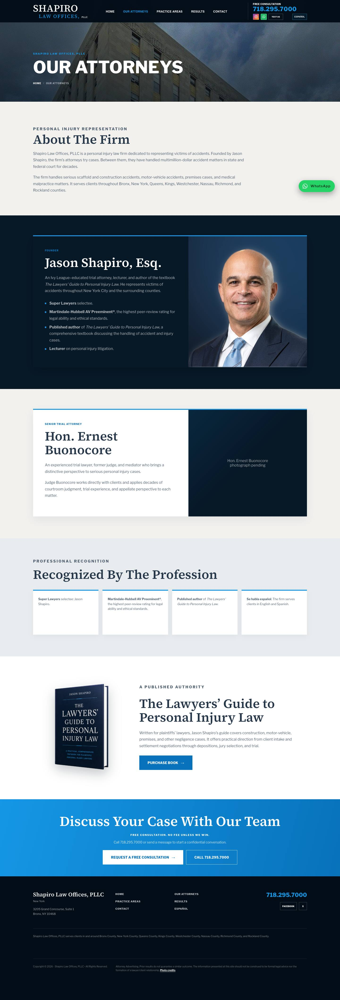
Actual before and after wording
| Before: copy-only revision 3ba90d9 | After: approved design restored | ||||
|---|---|---|---|---|---|
| n | n | 1 | Shapiro Law Offices, PLLC | ||
| 1 | Our Attorneys | 2 | Our Attorneys | ||
| n | n | 3 | Home | ||
| 4 | Home | ||||
| 5 | Our Attorneys | ||||
| 6 | Personal Injury Representation | ||||
| 2 | About The Firm | 7 | About The Firm | ||
| 3 | Shapiro Law Offices, PLLC is a personal injury law firm dedicate | 8 | Shapiro Law Offices, PLLC is a personal injury law firm dedicate | ||
| > | d to representing victims of accidents. Founded by Jason Shapiro | > | d to representing victims of accidents. Founded by Jason Shapiro | ||
| > | , the firm’s attorneys try cases — between them they have handle | > | , the firm’s attorneys try cases — between them they have handle | ||
| > | d multi-million dollar accident matters in state and federal cou | > | d multi-million dollar accident matters in state and federal cou | ||
| > | rt for decades. | > | rt for decades. | ||
| 4 | The firm focuses on all areas of accidents — scaffold and constr | 9 | The firm focuses on all areas of accidents — scaffold and constr | ||
| > | uction accidents, motor vehicle accidents, premises accidents, a | > | uction accidents, motor vehicle accidents, premises accidents, a | ||
| > | nd medical malpractice — serving clients throughout Bronx County | > | nd medical malpractice — serving clients throughout Bronx County | ||
| > | , New York County, Queens County, Kings County, Westchester Coun | > | , New York County, Queens County, Kings County, Westchester Coun | ||
| > | ty, Nassau County, Richmond County, and Rockland County. | > | ty, Nassau County, Richmond County, and Rockland County. | ||
| n | n | 10 | Founder | ||
| 5 | Jason Shapiro, Esq | 11 | Jason Shapiro, Esq | ||
| n | 6 | Founder | n | ||
| 7 | An Ivy League–educated trial attorney, lecturer, and author of t | 12 | An Ivy League–educated trial attorney, lecturer, and author of t | ||
| > | he textbook The Lawyers’ Guide to Personal Injury Law. He repres | > | he textbook The Lawyers’ Guide to Personal Injury Law. He repres | ||
| > | ents victims of accidents throughout New York City and the surro | > | ents victims of accidents throughout New York City and the surro | ||
| > | unding counties. | > | unding counties. | ||
| 8 | Super Lawyers selectee. | 13 | Super Lawyers selectee. | ||
| 10 | Published author — The Lawyers’ Guide to Personal Injury Law, a | 15 | Published author — The Lawyers’ Guide to Personal Injury Law, a | ||
| > | comprehensive textbook discussing, in depth, the handling of all | > | comprehensive textbook discussing, in depth, the handling of all | ||
| > | types of accident and injury-related cases. | > | types of accident and injury-related cases. | ||
| 11 | Lecturer on personal injury litigation. | 16 | Lecturer on personal injury litigation. | ||
| n | n | 17 | Senior Trial Attorney | ||
| 18 | Hon. Ernest Buonocore | ||||
| 19 | An experienced trial lawyer, former judge, and mediator who brin | ||||
| > | gs a distinctive perspective to serious personal injury cases. | ||||
| 20 | Judge Buonocore works directly with clients and applies decades | ||||
| > | of courtroom judgment, trial experience, and appellate perspecti | ||||
| > | ve to each matter. | ||||
| 21 | Professional Recognition | ||||
| 12 | Recognized By The Profession | 22 | Recognized By The Profession | ||
| 13 | Super Lawyers selectee — Jason Shapiro. | 23 | Super Lawyers selectee — Jason Shapiro. | ||
| n | n | 24 | Martindale-Hubbell AV Preeminent® , the highest peer-review rati | ||
| > | ng for legal ability and ethical standards. | ||||
| 14 | Published author — The Lawyers’ Guide to Personal Injury Law. | 25 | Published author — The Lawyers’ Guide to Personal Injury Law. | ||
| 15 | Se habla español — the firm serves clients in English and Spanis | 26 | Se habla español — the firm serves clients in English and Spanis | ||
| > | h. | > | h. | ||
| n | n | 27 | |||
| 28 | A Published Authority | ||||
| 16 | The Lawyers’ Guide to Personal Injury Law | 29 | The Lawyers’ Guide to Personal Injury Law | ||
| 17 | Written by Jason Shapiro, this is a comprehensive textbook for p | 30 | Written by Jason Shapiro, this is a comprehensive textbook for p | ||
| > | laintiffs’ personal injury attorneys. The textbook discusses, in | > | laintiffs’ personal injury attorneys. The textbook discusses, in | ||
| > | -depth, the handling of all types of accident and injury-related | > | -depth, the handling of all types of accident and injury-related | ||
| > | cases. | > | cases. | ||
| 18 | Purchase Book | 31 | Purchase Book | ||
| t | t | 32 | We Show Up For You. | ||
| 33 | Call now to speak with an attorney for a free consultation | ||||
| 34 | Book Your Free Consultation Now | ||||
| 35 | Call 718.295.7000 | ||||
Every source entry and its result
| Document paragraph | Role | Exact source text | Result |
|---|---|---|---|
| 242 | Page title (browser tab) | Our Attorneys | New York Personal Injury Lawyers - Shapiro Law Offices, PLLC | Exact |
| 244 | Search-results description | Meet the attorneys of Shapiro Law Offices, PLLC in New York - founder Jason Shapiro, Esq., an Ivy League-educated trial attorney and published author. | Exact |
| 246 | Section heading | About The Firm | Exact |
| 248 | Paragraph | Shapiro Law Offices, PLLC is a personal injury law firm dedicated to representing victims of accidents. Founded by Jason Shapiro, the firm’s attorneys try cases — between them they have handled multi-million dollar accident matters in state and federal court for decades. | Exact |
| 250 | Paragraph | The firm focuses on all areas of accidents — scaffold and construction accidents, motor vehicle accidents, premises accidents, and medical malpractice — serving clients throughout Bronx County, New York County, Queens County, Kings County, Westchester County, Nassau County, Richmond County, and Rockland County. | Exact |
| 252 | Heading | Jason Shapiro, Esq | Exact |
| 254 | Paragraph | Founder | Exact |
| 256 | Paragraph | An Ivy League–educated trial attorney, lecturer, and author of the textbook The Lawyers’ Guide to Personal Injury Law. He represents victims of accidents throughout New York City and the surrounding counties. | Exact |
| 258 | List item | Super Lawyers selectee. | Exact |
| 260 | List item | Martindale-Hubbell AV Preeminent® — the highest peer-review rating for legal ability and ethical standards. | Exact |
| 262 | List item | Published author — The Lawyers’ Guide to Personal Injury Law, a comprehensive textbook discussing, in depth, the handling of all types of accident and injury-related cases. | Exact |
| 264 | List item | Lecturer on personal injury litigation. | Exact |
| 266 | Image description | Jason Shapiro, Esq. — founder of Shapiro Law Offices, PLLC | Exact |
| 276 | Heading | Recognized By The Profession | Exact |
| 278 | List item | Super Lawyers selectee — Jason Shapiro. | Exact |
| 280 | List item | Published author — The Lawyers’ Guide to Personal Injury Law. | Exact |
| 282 | List item | Se habla español — the firm serves clients in English and Spanish. | Exact |
| 284 | Image description | The Lawyers' Guide to Personal Injury Law by Jason Shapiro, Esq. | Exact |
| 286 | Heading | The Lawyers’ Guide to Personal Injury Law | Exact |
| 288 | Paragraph | Written by Jason Shapiro, this is a comprehensive textbook for plaintiffs’ personal injury attorneys. The textbook discusses, in-depth, the handling of all types of accident and injury-related cases. | Exact |
| 290 | Button | Purchase Book | Exact |
| 14 | Paragraph | Call for a Free Consultation | Exact |
| 16 | Button | Book Your Free Consultation Now | Exact |
| 18 | Section heading | We Show Up For You. | Exact |
| 20 | Small heading | No Fee Until We Win!! | Exact |
| 22 | Paragraph | Call now to speak with an attorney for a free consultation | Exact |
| 24 | Button | Call 718.295.7000 | Exact |
| 26 | Heading | Location | Exact |
| 28 | Paragraph | 3205 Grand Concourse, Suite 1 Bronx, NY 10468 | Exact |
| 30 | Paragraph | Shapiro Law Offices, PLLC serves clients in and around Bronx County, New York County, Queens County, Kings County, Westchester County, Nassau County, Richmond County, and Rockland County. | Exact |
| 32 | Paragraph | 718.295.7000 | Exact |
| 34 | Paragraph | Copyright © 2026 - Shapiro Law Offices, PLLC • All Rights Reserved. | Exact |
| 36 | Paragraph | Attorney Advertising. Prior results do not guarantee a similar outcome. The information presented at this site should not be construed to be formal legal advice nor the formation of a lawyer/client relationship. Photo credits. | Exact |
practice-areas.html
48 source entries match exactly. 0 older result entries are superseded by the newer approved figures.
Desktop screenshots
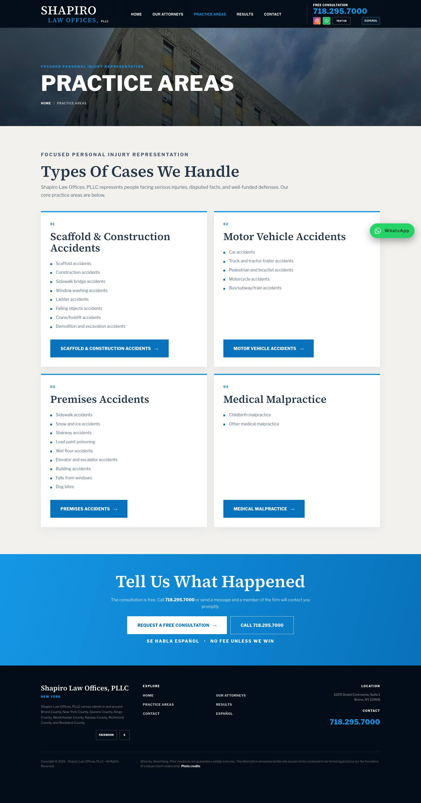
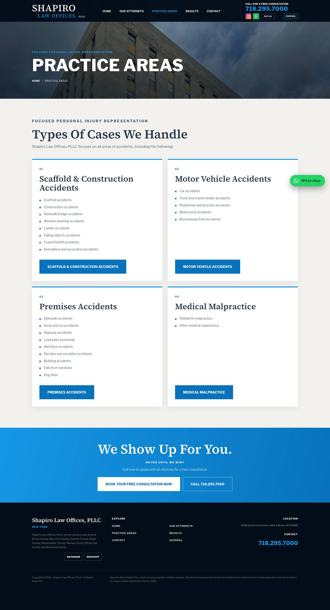
Mobile screenshots
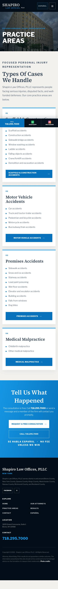
Actual before and after wording
| Before: copy-only revision 3ba90d9 | After: approved design restored | ||||
|---|---|---|---|---|---|
| n | n | 1 | Focused Personal Injury Representation | ||
| 1 | Practice Areas | 2 | Practice Areas | ||
| n | n | 3 | Home | ||
| 4 | Home | ||||
| 5 | Practice Areas | ||||
| 6 | Focused Personal Injury Representation | ||||
| 2 | Types Of Cases We Handle | 7 | Types Of Cases We Handle | ||
| 3 | Shapiro Law Offices, PLLC focuses on all areas of accidents, inc | 8 | Shapiro Law Offices, PLLC focuses on all areas of accidents, inc | ||
| > | luding the following: | > | luding the following: | ||
| 34 | Other medical malpractice | 39 | Other medical malpractice | ||
| 35 | Medical Malpractice | 40 | Medical Malpractice | ||
| t | t | 41 | We Show Up For You. | ||
| 42 | Call now to speak with an attorney for a free consultation | ||||
| 43 | Book Your Free Consultation Now | ||||
| 44 | Call 718.295.7000 | ||||
Every source entry and its result
| Document paragraph | Role | Exact source text | Result |
|---|---|---|---|
| 295 | Page title (browser tab) | Practice Areas | Shapiro Law Offices, PLLC - Bronx, NY | Exact |
| 297 | Search-results description | Scaffold and construction accidents, motor vehicle accidents, premises accidents, and medical malpractice - Shapiro Law Offices, PLLC represents injury victims across the Bronx and greater NYC. | Exact |
| 299 | Section heading | Types Of Cases We Handle | Exact |
| 301 | Paragraph | Shapiro Law Offices, PLLC focuses on all areas of accidents, including the following: | Exact |
| 303 | Heading | Scaffold & Construction Accidents | Exact |
| 305 | List item | Scaffold accidents | Exact |
| 307 | List item | Construction accidents | Exact |
| 309 | List item | Sidewalk bridge accidents | Exact |
| 311 | List item | Window washing accidents | Exact |
| 313 | List item | Ladder accidents | Exact |
| 315 | List item | Falling objects accidents | Exact |
| 317 | List item | Crane/forklift accidents | Exact |
| 319 | List item | Demolition and excavation accidents | Exact |
| 321 | Button | Scaffold & Construction Accidents | Exact |
| 323 | Heading | Motor Vehicle Accidents | Exact |
| 325 | List item | Car accidents | Exact |
| 327 | List item | Truck and tractor-trailer accidents | Exact |
| 329 | List item | Pedestrian and bicyclist accidents | Exact |
| 331 | List item | Motorcycle accidents | Exact |
| 333 | List item | Bus/subway/train accidents | Exact |
| 335 | Button | Motor Vehicle Accidents | Exact |
| 337 | Heading | Premises Accidents | Exact |
| 339 | List item | Sidewalk accidents | Exact |
| 341 | List item | Snow and ice accidents | Exact |
| 343 | List item | Stairway accidents | Exact |
| 345 | List item | Lead paint poisoning | Exact |
| 347 | List item | Wet floor accidents | Exact |
| 349 | List item | Elevator and escalator accidents | Exact |
| 351 | List item | Building accidents | Exact |
| 353 | List item | Falls from windows | Exact |
| 355 | List item | Dog bites | Exact |
| 357 | Button | Premises Accidents | Exact |
| 359 | Heading | Medical Malpractice | Exact |
| 361 | List item | Childbirth malpractice | Exact |
| 363 | List item | Other medical malpractice | Exact |
| 365 | Button | Medical Malpractice | Exact |
| 14 | Paragraph | Call for a Free Consultation | Exact |
| 16 | Button | Book Your Free Consultation Now | Exact |
| 18 | Section heading | We Show Up For You. | Exact |
| 20 | Small heading | No Fee Until We Win!! | Exact |
| 22 | Paragraph | Call now to speak with an attorney for a free consultation | Exact |
| 24 | Button | Call 718.295.7000 | Exact |
| 26 | Heading | Location | Exact |
| 28 | Paragraph | 3205 Grand Concourse, Suite 1 Bronx, NY 10468 | Exact |
| 30 | Paragraph | Shapiro Law Offices, PLLC serves clients in and around Bronx County, New York County, Queens County, Kings County, Westchester County, Nassau County, Richmond County, and Rockland County. | Exact |
| 32 | Paragraph | 718.295.7000 | Exact |
| 34 | Paragraph | Copyright © 2026 - Shapiro Law Offices, PLLC • All Rights Reserved. | Exact |
| 36 | Paragraph | Attorney Advertising. Prior results do not guarantee a similar outcome. The information presented at this site should not be construed to be formal legal advice nor the formation of a lawyer/client relationship. Photo credits. | Exact |
practice-areas/construction-scaffold.html
26 source entries match exactly. 0 older result entries are superseded by the newer approved figures.
Desktop screenshots
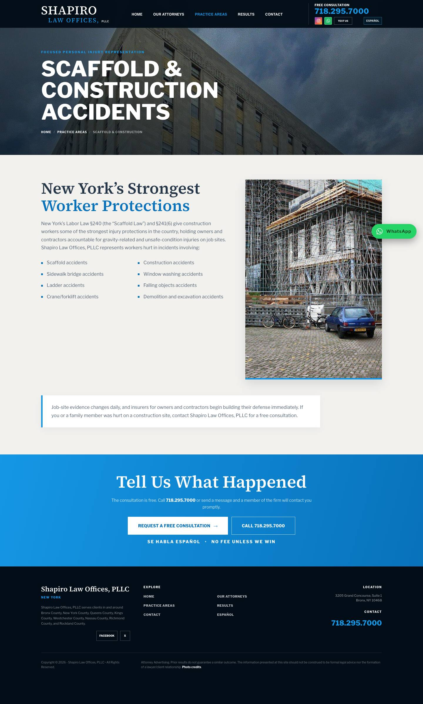
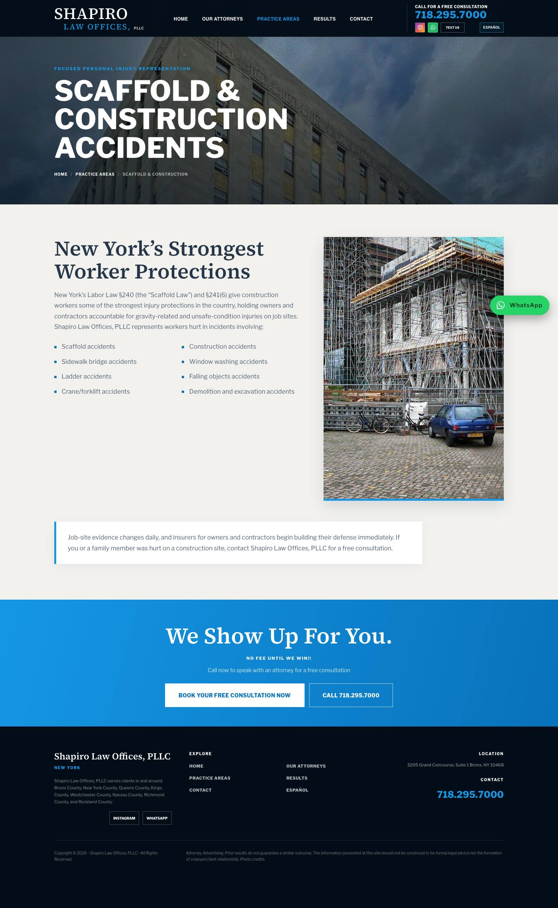
Mobile screenshots
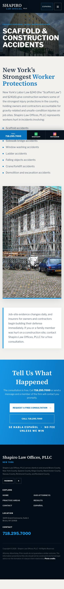
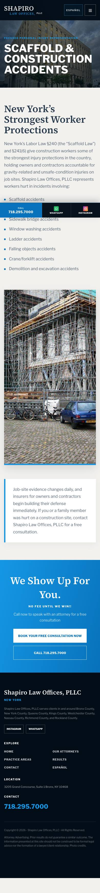
Actual before and after wording
| Before: copy-only revision 3ba90d9 | After: approved design restored | ||||
|---|---|---|---|---|---|
| n | n | 1 | Focused Personal Injury Representation | ||
| 1 | Scaffold & Construction Accidents | 2 | Scaffold & Construction Accidents | ||
| n | n | 3 | Home | ||
| 4 | Home | ||||
| 5 | Practice Areas | ||||
| 6 | Practice Areas | ||||
| 7 | Scaffold & Construction | ||||
| 2 | New York’s Strongest Worker Protections | 8 | New York’s Strongest Worker Protections | ||
| 3 | New York’s Labor Law §240 (the “Scaffold Law”) and §241(6) give | 9 | New York’s Labor Law §240 (the “Scaffold Law”) and §241(6) give | ||
| > | construction workers some of the strongest injury protections in | > | construction workers some of the strongest injury protections in | ||
| > | the country, holding owners and contractors accountable for gra | > | the country, holding owners and contractors accountable for gra | ||
| > | vity-related and unsafe-condition injuries on job sites. Shapiro | > | vity-related and unsafe-condition injuries on job sites. Shapiro | ||
| > | Law Offices, PLLC represents workers hurt in incidents involvin | > | Law Offices, PLLC represents workers hurt in incidents involvin | ||
| > | g: | > | g: | ||
| 11 | Demolition and excavation accidents | 17 | Demolition and excavation accidents | ||
| 12 | Job-site evidence changes daily, and insurers for owners and con | 18 | Job-site evidence changes daily, and insurers for owners and con | ||
| > | tractors begin building their defense immediately. If you or a f | > | tractors begin building their defense immediately. If you or a f | ||
| > | amily member was hurt on a construction site, contact Shapiro La | > | amily member was hurt on a construction site, contact Shapiro La | ||
| > | w Offices, PLLC for a free consultation. | > | w Offices, PLLC for a free consultation. | ||
| t | t | 19 | We Show Up For You. | ||
| 20 | Call now to speak with an attorney for a free consultation | ||||
| 21 | Book Your Free Consultation Now | ||||
| 22 | Call 718.295.7000 | ||||
Every source entry and its result
| Document paragraph | Role | Exact source text | Result |
|---|---|---|---|
| 370 | Page title (browser tab) | New York Scaffold & Construction Accident Lawyer | Shapiro Law Offices, PLLC | Exact |
| 372 | Search-results description | New York Labor Law protects construction workers injured in scaffold falls, ladder accidents, falling objects, and demolition accidents. Free consultation: 718.295.7000. | Exact |
| 374 | Main headline | Scaffold & Construction Accidents | Exact |
| 376 | Section heading | New York’s Strongest Worker Protections | Exact |
| 378 | Paragraph | New York’s Labor Law §240 (the “Scaffold Law”) and §241(6) give construction workers some of the strongest injury protections in the country, holding owners and contractors accountable for gravity-related and unsafe-condition injuries on job sites. Shapiro Law Offices, PLLC represents workers hurt in incidents involving: | Exact |
| 380 | List item | Scaffold accidents | Exact |
| 382 | List item | Construction accidents | Exact |
| 384 | List item | Sidewalk bridge accidents | Exact |
| 386 | List item | Window washing accidents | Exact |
| 388 | List item | Ladder accidents | Exact |
| 390 | List item | Falling objects accidents | Exact |
| 392 | List item | Crane/forklift accidents | Exact |
| 394 | List item | Demolition and excavation accidents | Exact |
| 396 | Paragraph | Job-site evidence changes daily, and insurers for owners and contractors begin building their defense immediately. If you or a family member was hurt on a construction site, contact Shapiro Law Offices, PLLC for a free consultation. | Exact |
| 14 | Paragraph | Call for a Free Consultation | Exact |
| 16 | Button | Book Your Free Consultation Now | Exact |
| 18 | Section heading | We Show Up For You. | Exact |
| 20 | Small heading | No Fee Until We Win!! | Exact |
| 22 | Paragraph | Call now to speak with an attorney for a free consultation | Exact |
| 24 | Button | Call 718.295.7000 | Exact |
| 26 | Heading | Location | Exact |
| 28 | Paragraph | 3205 Grand Concourse, Suite 1 Bronx, NY 10468 | Exact |
| 30 | Paragraph | Shapiro Law Offices, PLLC serves clients in and around Bronx County, New York County, Queens County, Kings County, Westchester County, Nassau County, Richmond County, and Rockland County. | Exact |
| 32 | Paragraph | 718.295.7000 | Exact |
| 34 | Paragraph | Copyright © 2026 - Shapiro Law Offices, PLLC • All Rights Reserved. | Exact |
| 36 | Paragraph | Attorney Advertising. Prior results do not guarantee a similar outcome. The information presented at this site should not be construed to be formal legal advice nor the formation of a lawyer/client relationship. Photo credits. | Exact |
practice-areas/motor-vehicle.html
23 source entries match exactly. 0 older result entries are superseded by the newer approved figures.

Mobile screenshots
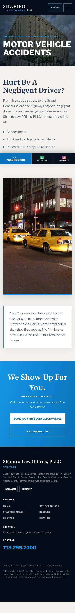
Actual before and after wording
| Before: copy-only revision 3ba90d9 | After: approved design restored | ||||
|---|---|---|---|---|---|
| n | n | 1 | Focused Personal Injury Representation | ||
| 2 | Motor Vehicle Accidents | ||||
| 3 | Home | ||||
| 4 | Home | ||||
| 5 | Practice Areas | ||||
| 6 | Practice Areas | ||||
| 1 | Motor Vehicle Accidents | 7 | Motor Vehicle Accidents | ||
| 2 | Hurt By A Negligent Driver? | 8 | Hurt By A Negligent Driver? | ||
| 8 | Bus/subway/train accidents | 14 | Bus/subway/train accidents | ||
| 9 | New York’s no-fault insurance system and serious-injury threshol | 15 | New York’s no-fault insurance system and serious-injury threshol | ||
| > | d make motor vehicle claims more complicated than they first app | > | d make motor vehicle claims more complicated than they first app | ||
| > | ear. The firm knows how to build the record insurers cannot igno | > | ear. The firm knows how to build the record insurers cannot igno | ||
| > | re. | > | re. | ||
| t | t | 16 | We Show Up For You. | ||
| 17 | Call now to speak with an attorney for a free consultation | ||||
| 18 | Book Your Free Consultation Now | ||||
| 19 | Call 718.295.7000 | ||||
Every source entry and its result
| Document paragraph | Role | Exact source text | Result |
|---|---|---|---|
| 401 | Page title (browser tab) | New York Motor Vehicle Accident Lawyer | Shapiro Law Offices, PLLC | Exact |
| 403 | Search-results description | Representing drivers, passengers, pedestrians, cyclists, and transit riders hurt in New York motor vehicle accidents. Free consultation: 718.295.7000. | Exact |
| 405 | Main headline | Motor Vehicle Accidents | Exact |
| 407 | Section heading | Hurt By A Negligent Driver? | Exact |
| 409 | Paragraph | From Bronx side streets to the Grand Concourse and the highways beyond, negligent drivers cause life-changing injuries every day. Shapiro Law Offices, PLLC represents victims of: | Exact |
| 411 | List item | Car accidents | Exact |
| 413 | List item | Truck and tractor-trailer accidents | Exact |
| 415 | List item | Pedestrian and bicyclist accidents | Exact |
| 417 | List item | Motorcycle accidents | Exact |
| 419 | List item | Bus/subway/train accidents | Exact |
| 421 | Paragraph | New York’s no-fault insurance system and serious-injury threshold make motor vehicle claims more complicated than they first appear. The firm knows how to build the record insurers cannot ignore. | Exact |
| 14 | Paragraph | Call for a Free Consultation | Exact |
| 16 | Button | Book Your Free Consultation Now | Exact |
| 18 | Section heading | We Show Up For You. | Exact |
| 20 | Small heading | No Fee Until We Win!! | Exact |
| 22 | Paragraph | Call now to speak with an attorney for a free consultation | Exact |
| 24 | Button | Call 718.295.7000 | Exact |
| 26 | Heading | Location | Exact |
| 28 | Paragraph | 3205 Grand Concourse, Suite 1 Bronx, NY 10468 | Exact |
| 30 | Paragraph | Shapiro Law Offices, PLLC serves clients in and around Bronx County, New York County, Queens County, Kings County, Westchester County, Nassau County, Richmond County, and Rockland County. | Exact |
| 32 | Paragraph | 718.295.7000 | Exact |
| 34 | Paragraph | Copyright © 2026 - Shapiro Law Offices, PLLC • All Rights Reserved. | Exact |
| 36 | Paragraph | Attorney Advertising. Prior results do not guarantee a similar outcome. The information presented at this site should not be construed to be formal legal advice nor the formation of a lawyer/client relationship. Photo credits. | Exact |
practice-areas/premises.html
27 source entries match exactly. 0 older result entries are superseded by the newer approved figures.
Desktop screenshots
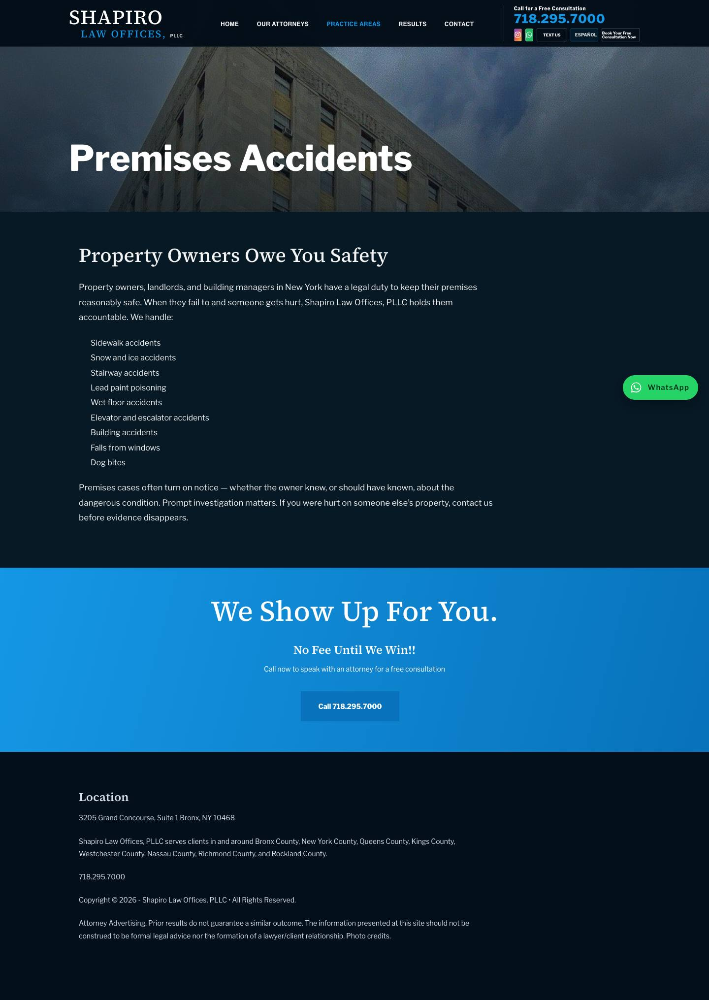

Actual before and after wording
| Before: copy-only revision 3ba90d9 | After: approved design restored | ||||
|---|---|---|---|---|---|
| n | n | 1 | Focused Personal Injury Representation | ||
| 2 | Premises Accidents | ||||
| 3 | Home | ||||
| 4 | Home | ||||
| 5 | Practice Areas | ||||
| 6 | Practice Areas | ||||
| 1 | Premises Accidents | 7 | Premises Accidents | ||
| 2 | Property Owners Owe You Safety | 8 | Property Owners Owe You Safety | ||
| 12 | Dog bites | 18 | Dog bites | ||
| 13 | Premises cases often turn on notice — whether the owner knew, or | 19 | Premises cases often turn on notice — whether the owner knew, or | ||
| > | should have known, about the dangerous condition. Prompt invest | > | should have known, about the dangerous condition. Prompt invest | ||
| > | igation matters. If you were hurt on someone else’s property, co | > | igation matters. If you were hurt on someone else’s property, co | ||
| > | ntact us before evidence disappears. | > | ntact us before evidence disappears. | ||
| t | t | 20 | We Show Up For You. | ||
| 21 | Call now to speak with an attorney for a free consultation | ||||
| 22 | Book Your Free Consultation Now | ||||
| 23 | Call 718.295.7000 | ||||
Every source entry and its result
| Document paragraph | Role | Exact source text | Result |
|---|---|---|---|
| 426 | Page title (browser tab) | New York Premises Accident Lawyer | Shapiro Law Offices, PLLC | Exact |
| 428 | Search-results description | Property owners owe every visitor a duty of reasonable care. Sidewalk falls, snow and ice, elevator accidents, dog bites, and more. Free consultation: 718.295.7000. | Exact |
| 430 | Main headline | Premises Accidents | Exact |
| 432 | Section heading | Property Owners Owe You Safety | Exact |
| 434 | Paragraph | Property owners, landlords, and building managers in New York have a legal duty to keep their premises reasonably safe. When they fail to and someone gets hurt, Shapiro Law Offices, PLLC holds them accountable. We handle: | Exact |
| 436 | List item | Sidewalk accidents | Exact |
| 438 | List item | Snow and ice accidents | Exact |
| 440 | List item | Stairway accidents | Exact |
| 442 | List item | Lead paint poisoning | Exact |
| 444 | List item | Wet floor accidents | Exact |
| 446 | List item | Elevator and escalator accidents | Exact |
| 448 | List item | Building accidents | Exact |
| 450 | List item | Falls from windows | Exact |
| 452 | List item | Dog bites | Exact |
| 454 | Paragraph | Premises cases often turn on notice — whether the owner knew, or should have known, about the dangerous condition. Prompt investigation matters. If you were hurt on someone else’s property, contact us before evidence disappears. | Exact |
| 14 | Paragraph | Call for a Free Consultation | Exact |
| 16 | Button | Book Your Free Consultation Now | Exact |
| 18 | Section heading | We Show Up For You. | Exact |
| 20 | Small heading | No Fee Until We Win!! | Exact |
| 22 | Paragraph | Call now to speak with an attorney for a free consultation | Exact |
| 24 | Button | Call 718.295.7000 | Exact |
| 26 | Heading | Location | Exact |
| 28 | Paragraph | 3205 Grand Concourse, Suite 1 Bronx, NY 10468 | Exact |
| 30 | Paragraph | Shapiro Law Offices, PLLC serves clients in and around Bronx County, New York County, Queens County, Kings County, Westchester County, Nassau County, Richmond County, and Rockland County. | Exact |
| 32 | Paragraph | 718.295.7000 | Exact |
| 34 | Paragraph | Copyright © 2026 - Shapiro Law Offices, PLLC • All Rights Reserved. | Exact |
| 36 | Paragraph | Attorney Advertising. Prior results do not guarantee a similar outcome. The information presented at this site should not be construed to be formal legal advice nor the formation of a lawyer/client relationship. Photo credits. | Exact |
practice-areas/medical-malpractice.html
20 source entries match exactly. 0 older result entries are superseded by the newer approved figures.
Desktop screenshots
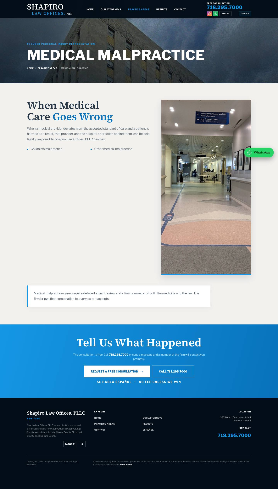
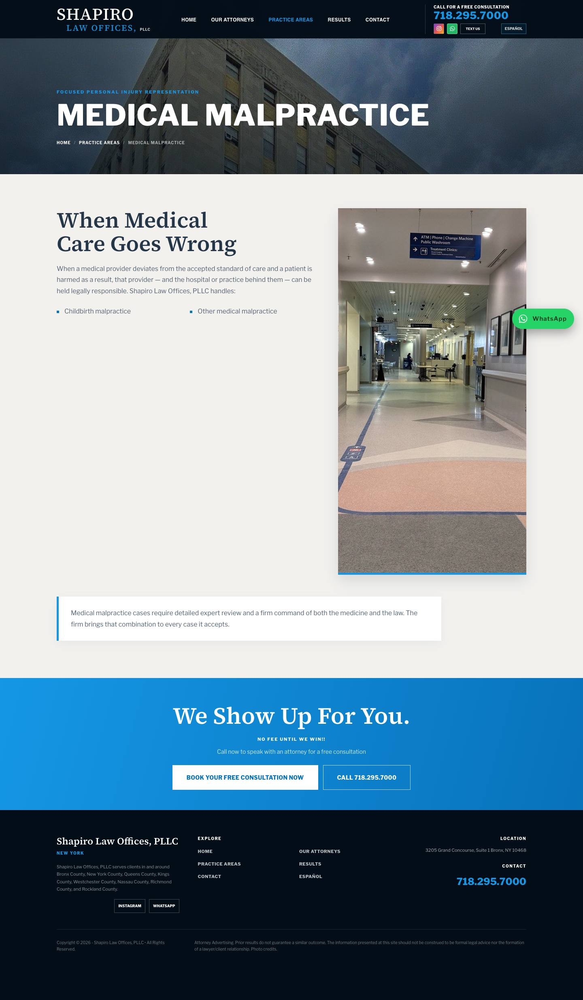
Actual before and after wording
| Before: copy-only revision 3ba90d9 | After: approved design restored | ||||
|---|---|---|---|---|---|
| n | n | 1 | Focused Personal Injury Representation | ||
| 2 | Medical Malpractice | ||||
| 3 | Home | ||||
| 4 | Home | ||||
| 5 | Practice Areas | ||||
| 6 | Practice Areas | ||||
| 1 | Medical Malpractice | 7 | Medical Malpractice | ||
| 2 | When Medical Care Goes Wrong | 8 | When Medical Care Goes Wrong | ||
| 5 | Other medical malpractice | 11 | Other medical malpractice | ||
| 6 | Medical malpractice cases require detailed expert review and a f | 12 | Medical malpractice cases require detailed expert review and a f | ||
| > | irm command of both the medicine and the law. The firm brings th | > | irm command of both the medicine and the law. The firm brings th | ||
| > | at combination to every case it accepts. | > | at combination to every case it accepts. | ||
| t | t | 13 | We Show Up For You. | ||
| 14 | Call now to speak with an attorney for a free consultation | ||||
| 15 | Book Your Free Consultation Now | ||||
| 16 | Call 718.295.7000 | ||||
Every source entry and its result
| Document paragraph | Role | Exact source text | Result |
|---|---|---|---|
| 459 | Page title (browser tab) | New York Medical Malpractice Lawyer | Shapiro Law Offices, PLLC | Exact |
| 461 | Search-results description | Holding hospitals, doctors, and medical providers accountable for negligent care, including childbirth malpractice. Free consultation: 718.295.7000. | Exact |
| 463 | Main headline | Medical Malpractice | Exact |
| 465 | Section heading | When Medical Care Goes Wrong | Exact |
| 467 | Paragraph | When a medical provider deviates from the accepted standard of care and a patient is harmed as a result, that provider — and the hospital or practice behind them — can be held legally responsible. Shapiro Law Offices, PLLC handles: | Exact |
| 469 | List item | Childbirth malpractice | Exact |
| 471 | List item | Other medical malpractice | Exact |
| 473 | Paragraph | Medical malpractice cases require detailed expert review and a firm command of both the medicine and the law. The firm brings that combination to every case it accepts. | Exact |
| 14 | Paragraph | Call for a Free Consultation | Exact |
| 16 | Button | Book Your Free Consultation Now | Exact |
| 18 | Section heading | We Show Up For You. | Exact |
| 20 | Small heading | No Fee Until We Win!! | Exact |
| 22 | Paragraph | Call now to speak with an attorney for a free consultation | Exact |
| 24 | Button | Call 718.295.7000 | Exact |
| 26 | Heading | Location | Exact |
| 28 | Paragraph | 3205 Grand Concourse, Suite 1 Bronx, NY 10468 | Exact |
| 30 | Paragraph | Shapiro Law Offices, PLLC serves clients in and around Bronx County, New York County, Queens County, Kings County, Westchester County, Nassau County, Richmond County, and Rockland County. | Exact |
| 32 | Paragraph | 718.295.7000 | Exact |
| 34 | Paragraph | Copyright © 2026 - Shapiro Law Offices, PLLC • All Rights Reserved. | Exact |
| 36 | Paragraph | Attorney Advertising. Prior results do not guarantee a similar outcome. The information presented at this site should not be construed to be formal legal advice nor the formation of a lawyer/client relationship. Photo credits. | Exact |
results.html
17 source entries match exactly. 7 older result entries are superseded by the newer approved figures.


Actual before and after wording
| Before: copy-only revision 3ba90d9 | After: approved design restored | ||||
|---|---|---|---|---|---|
| n | n | 1 | Proven Results. Personal Attention. | ||
| 1 | Verdicts & Settlements | 2 | Verdicts & Settlements | ||
| n | n | 3 | Serious injuries, disputed facts, and difficult defenses, handle | ||
| > | d with experienced judgment and direct attorney involvement. | ||||
| 4 | Home | ||||
| 5 | Home | ||||
| 6 | Results | ||||
| 7 | Verdicts and Settlements | ||||
| 2 | Published Case Results | 8 | Published Case Results | ||
| n | 3 | $5,645,000 | n | 9 | These selected results reflect the preparation, judgment, and di |
| > | rect attorney attention we bring to serious personal injury case | ||||
| > | s. | ||||
| 4 | Jury Verdict | 10 | Birth injury for a child who sustained serious harm. | ||
| 5 | $4,000,000 | 11 | Passenger ejected in a motor-vehicle crash. | ||
| 6 | Settlement | 12 | Disputed motor-vehicle collision. | ||
| 7 | $3,000,000 | 13 | Worker injured in a scaffold accident. | ||
| 8 | $2,500,000 | 14 | First Department appellate victory in a ladder case. | ||
| 9 | $2,100,000 | ||||
| 10 | Attorney Advertising. Prior results do not guarantee a similar o | 15 | Attorney Advertising. Prior results do not guarantee a similar o | ||
| > | utcome. Each case is different and must be judged on its own fac | > | utcome. Each case is different and must be judged on its own fac | ||
| > | ts. | > | ts. | ||
| t | t | 16 | We Show Up For You. | ||
| 17 | Call now to speak with an attorney for a free consultation | ||||
| 18 | Book Your Free Consultation Now | ||||
| 19 | Call 718.295.7000 | ||||
Every source entry and its result
| Document paragraph | Role | Exact source text | Result |
|---|---|---|---|
| 478 | Page title (browser tab) | Verdicts & Settlements | Shapiro Law Offices, PLLC | Exact |
| 480 | Search-results description | Real case results from Shapiro Law Offices, PLLC, including a $5,645,000 verdict and multiple seven-figure settlements. Prior results do not guarantee a similar outcome. | Exact |
| 482 | Main headline | Verdicts & Settlements | Exact |
| 484 | Section heading | Published Case Results | Exact |
| 486 | Heading | $5,645,000 | Newer approved result retained |
| 488 | Paragraph | Jury Verdict | Newer approved result retained |
| 490 | Heading | $4,000,000 | Newer approved result retained |
| 492 | Paragraph | Settlement | Newer approved result retained |
| 494 | Heading | $3,000,000 | Newer approved result retained |
| 496 | Heading | $2,500,000 | Newer approved result retained |
| 498 | Heading | $2,100,000 | Newer approved result retained |
| 500 | Paragraph | Attorney Advertising. Prior results do not guarantee a similar outcome. Each case is different and must be judged on its own facts. | Exact |
| 14 | Paragraph | Call for a Free Consultation | Exact |
| 16 | Button | Book Your Free Consultation Now | Exact |
| 18 | Section heading | We Show Up For You. | Exact |
| 20 | Small heading | No Fee Until We Win!! | Exact |
| 22 | Paragraph | Call now to speak with an attorney for a free consultation | Exact |
| 24 | Button | Call 718.295.7000 | Exact |
| 26 | Heading | Location | Exact |
| 28 | Paragraph | 3205 Grand Concourse, Suite 1 Bronx, NY 10468 | Exact |
| 30 | Paragraph | Shapiro Law Offices, PLLC serves clients in and around Bronx County, New York County, Queens County, Kings County, Westchester County, Nassau County, Richmond County, and Rockland County. | Exact |
| 32 | Paragraph | 718.295.7000 | Exact |
| 34 | Paragraph | Copyright © 2026 - Shapiro Law Offices, PLLC • All Rights Reserved. | Exact |
| 36 | Paragraph | Attorney Advertising. Prior results do not guarantee a similar outcome. The information presented at this site should not be construed to be formal legal advice nor the formation of a lawyer/client relationship. Photo credits. | Exact |
contact.html
34 source entries match exactly. 0 older result entries are superseded by the newer approved figures.
Desktop screenshots
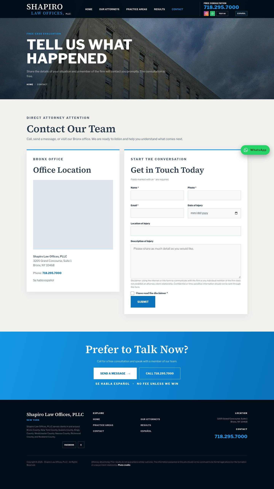
Actual before and after wording
| Before: copy-only revision 3ba90d9 | After: approved design restored | ||||
|---|---|---|---|---|---|
| n | n | 1 | Free Case Evaluation | ||
| 1 | Contact Us | 2 | Contact Us | ||
| n | n | 3 | Share the details of your situation and a member of the firm wil | ||
| > | l contact you promptly. The consultation is free. | ||||
| 4 | Home | ||||
| 5 | Home | ||||
| 6 | Contact | ||||
| 2 | Office Location | 7 | Office Location | ||
| 3 | Shapiro Law Offices, PLLC 3205 Grand Concourse, Suite 1 Bronx, N | 8 | Shapiro Law Offices, PLLC 3205 Grand Concourse, Suite 1 Bronx, N | ||
| > | Y 10468 Phone: 718.295.7000 Se habla español | > | Y 10468 Phone: 718.295.7000 Se habla español | ||
| 13 | I Have Read The Disclaimer * | 18 | I Have Read The Disclaimer * | ||
| 14 | Submit | 19 | Submit | ||
| t | t | 20 | We Show Up For You. | ||
| 21 | Call now to speak with an attorney for a free consultation | ||||
| 22 | Book Your Free Consultation Now | ||||
| 23 | Call 718.295.7000 | ||||
Every source entry and its result
| Document paragraph | Role | Exact source text | Result |
|---|---|---|---|
| 505 | Page title (browser tab) | Contact Us | Shapiro Law Offices, PLLC - Bronx, NY | Exact |
| 507 | Search-results description | Contact Shapiro Law Offices, PLLC - 3205 Grand Concourse, Suite 1, Bronx, NY 10468. Free consultation: 718.295.7000. | Exact |
| 509 | Main headline | Contact Us | Exact |
| 512 | Section heading | Office Location | Exact |
| 514 | Paragraph | Shapiro Law Offices, PLLC 3205 Grand Concourse, Suite 1 Bronx, NY 10468 Phone: 718.295.7000 Se habla español | Exact |
| 516 | Section heading | Get in Touch Today With a Member of Our Team. | Exact |
| 518 | Paragraph | Fields marked with an “*” are required | Exact |
| 520 | Form label | Name * | Exact |
| 522 | Form field | Name * | Exact |
| 524 | Form label | Phone * | Exact |
| 526 | Form field | Phone * | Exact |
| 528 | Form label | Email * | Exact |
| 530 | Form field | Email * | Exact |
| 532 | Form label | Date of Injury | Exact |
| 534 | Form field | Date of Injury | Exact |
| 536 | Form label | Location of Injury | Exact |
| 538 | Form field | Location of Injury | Exact |
| 540 | Form label | Description of Injury | Exact |
| 542 | Form field | Description of Injury | Exact |
| 544 | Paragraph | Disclaimer: The use of the internet or this form for communication with the firm or any individual member of the firm does not establish an attorney-client relationship. Confidential or time-sensitive information should not be sent through this form. | Exact |
| 546 | Form label | I Have Read The Disclaimer * | Exact |
| 548 | Button | Submit | Exact |
| 14 | Paragraph | Call for a Free Consultation | Exact |
| 16 | Button | Book Your Free Consultation Now | Exact |
| 18 | Section heading | We Show Up For You. | Exact |
| 20 | Small heading | No Fee Until We Win!! | Exact |
| 22 | Paragraph | Call now to speak with an attorney for a free consultation | Exact |
| 24 | Button | Call 718.295.7000 | Exact |
| 26 | Heading | Location | Exact |
| 28 | Paragraph | 3205 Grand Concourse, Suite 1 Bronx, NY 10468 | Exact |
| 30 | Paragraph | Shapiro Law Offices, PLLC serves clients in and around Bronx County, New York County, Queens County, Kings County, Westchester County, Nassau County, Richmond County, and Rockland County. | Exact |
| 32 | Paragraph | 718.295.7000 | Exact |
| 34 | Paragraph | Copyright © 2026 - Shapiro Law Offices, PLLC • All Rights Reserved. | Exact |
| 36 | Paragraph | Attorney Advertising. Prior results do not guarantee a similar outcome. The information presented at this site should not be construed to be formal legal advice nor the formation of a lawyer/client relationship. Photo credits. | Exact |
es/index.html
90 source entries match exactly. 7 older result entries are superseded by the newer approved figures.

Mobile screenshots
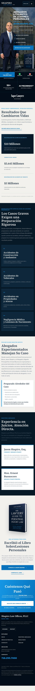

Actual before and after wording
| Before: copy-only revision 3ba90d9 | After: approved design restored | ||||
|---|---|---|---|---|---|
| f | 1 | Abogados de Lesiones Personales | f | 1 | Abogados de Lesiones Personales |
| n | 2 | ¡No Paga Si No Ganamos Su Caso! | n | 2 | Jason Shapiro, Esq |
| 3 | Abogado Litigante Educado en la Ivy League | 3 | Abogado Litigante Educado en la Ivy League | ||
| 4 | Autor de The Lawyers’ Guide to Personal Injury Law | 4 | Autor de The Lawyers’ Guide to Personal Injury Law | ||
| n | 5 | Seleccionado a Super Lawyers | n | 5 | ¡No Paga Si No Ganamos Su Caso! |
| 6 | Martindale-Hubbell AV Preeminent | 6 | Consultas Gratis | ||
| 7 | ★ Se Habla Español ★ | 7 | ★ Se Habla Español ★ | ||
| n | n | 8 | Reserve Su Consulta Gratis | ||
| 8 | 9 | ||||
| 9 | Accidentes de Andamios | 10 | Accidentes de Andamios | ||
| 12 | Accidentes en Propiedades | 13 | Accidentes en Propiedades | ||
| 13 | Negligencia Médica | 14 | Negligencia Médica | ||
| n | n | 15 | Resultados Comprobados. Atención Personal. | ||
| 14 | Resultados Comprobados Para Neoyorquinos Lesionados | 16 | Resultados Comprobados Para Neoyorquinos Lesionados | ||
| n | n | 17 | Lesiones graves, hechos disputados y defensas difíciles, manejad | ||
| > | os con criterio experimentado y participación directa del abogad | ||||
| > | o. | ||||
| 15 | Ver Resultados de Casos | 18 | Ver Resultados de Casos | ||
| n | 16 | $5,645,000 | n | 19 | Indemnización por lesión de nacimiento para un niño que sufrió d |
| > | años graves. | ||||
| 17 | Veredicto del Jurado | 20 | Veredicto para un pasajero expulsado en un choque de vehículos. | ||
| 18 | $4,000,000 | 21 | Indemnización en una colisión de vehículos disputada. | ||
| 19 | Acuerdo | 22 | Publicidad de Abogados. Los resultados anteriores no garantizan | ||
| > | un resultado similar. | ||||
| 20 | $3,000,000 | 23 | Representación Especializada en Lesiones Personales | ||
| 21 | $2,500,000 | 24 | Tipos De Casos Que Manejamos | ||
| 22 | $2,100,000 | 25 | 01 Accidentes de Andamios Accidentes de Construcción | ||
| 26 | Accidentes de Andamios | ||||
| 27 | Accidentes de Construcción | ||||
| 28 | 02 Accidentes de Auto Accidentes de Camión Accidentes de Peatone | ||||
| > | s | ||||
| 29 | Accidentes de Auto | ||||
| 30 | Accidentes de Camión | ||||
| 31 | Accidentes de Peatones | ||||
| 32 | 03 Accidentes en Propiedades | ||||
| 33 | Accidentes en Propiedades | ||||
| 34 | 04 Negligencia Médica Negligencia en el Parto | ||||
| 35 | Negligencia Médica | ||||
| 36 | Negligencia en el Parto | ||||
| 37 | Por Qué Elegir Nuestro Bufete | ||||
| 23 | Bufete Líder en Lesiones Personales ¡No Paga Si No Ganamos Su Ca | 38 | Bufete Líder en Lesiones Personales ¡No Paga Si No Ganamos Su Ca | ||
| > | so! | > | so! | ||
| 24 | Estamos dedicados a representar a las víctimas de accidentes en | 39 | Estamos dedicados a representar a las víctimas de accidentes en | ||
| > | cada paso del camino. | > | cada paso del camino. | ||
| 25 | Fundado por Jason Shapiro — un destacado abogado litigante, conf | 40 | Fundado por Jason Shapiro — un destacado abogado litigante, conf | ||
| > | erencista y autor del libro de texto The Lawyers’ Guide to Perso | > | erencista y autor del libro de texto The Lawyers’ Guide to Perso | ||
| > | nal Injury Law (Guía del Abogado sobre la Ley de Lesiones Person | > | nal Injury Law (Guía del Abogado sobre la Ley de Lesiones Person | ||
| > | ales) — el bufete maneja accidentes de andamios, construcción, v | > | ales) — el bufete maneja accidentes de andamios, construcción, v | ||
| > | ehículos motorizados y propiedades, y negligencia médica. | > | ehículos motorizados y propiedades, y negligencia médica. | ||
| 26 | Estaremos A Su Lado | 41 | Estaremos A Su Lado | ||
| n | 27 | Tipos De Casos Que Manejamos | n | 42 | Por Qué Elegir Shapiro Law Offices, PLLC |
| 28 | Accidentes de Andamios | 43 | Usted no pagará honorarios de abogado a menos que ganemos su cas | ||
| > | o | ||||
| 29 | Accidentes de Construcción | 44 | El bufete es dirigido por un destacado abogado litigante educado | ||
| > | en la Ivy League | ||||
| 30 | Accidentes de Auto | 45 | Llame o agende una consulta completamente gratis | ||
| 31 | Accidentes de Camión | 46 | Autor de The Lawyers’ Guide to Personal Injury Law, el libro de | ||
| > | texto sobre casos de accidentes y lesiones | ||||
| 32 | Accidentes de Peatones | 47 | Un enfoque personal y directo para guiarlo en sus momentos difíc | ||
| > | iles | ||||
| 33 | Accidentes en Propiedades | 48 | Sirviendo la ciudad de Nueva York y los condados vecinos en ingl | ||
| > | és y español | ||||
| 34 | Negligencia Médica | 49 | Nuestros Abogados | ||
| 35 | Negligencia en el Parto | ||||
| 36 | Conozca a Nuestros Abogados | 50 | Conozca a Nuestros Abogados | ||
| 37 | Shapiro Law Offices, PLLC es un bufete litigante. Su caso lo man | 51 | Shapiro Law Offices, PLLC es un bufete litigante. Su caso lo man | ||
| > | ejan abogados que llevan casos a juicio — no se pasa de mano en | > | ejan abogados que llevan casos a juicio — no se pasa de mano en | ||
| > | mano. | > | mano. | ||
| 38 | Jason Shapiro, Esq | 52 | Jason Shapiro, Esq | ||
| n | 39 | Fundador | n | ||
| 40 | Abogado litigante educado en una universidad de la Ivy League qu | 53 | Abogado litigante educado en una universidad de la Ivy League qu | ||
| > | e representa a víctimas de accidentes en la ciudad de Nueva York | > | e representa a víctimas de accidentes en la ciudad de Nueva York | ||
| > | y los condados vecinos. Es conferencista y autor del libro de t | > | y los condados vecinos. Es conferencista y autor del libro de t | ||
| > | exto The Lawyers’ Guide to Personal Injury Law, una guía integra | > | exto The Lawyers’ Guide to Personal Injury Law, una guía integra | ||
| > | l para abogados de lesiones personales. | > | l para abogados de lesiones personales. | ||
| 41 | Ha sido seleccionado para Super Lawyers y posee la calificación | 54 | Ha sido seleccionado para Super Lawyers y posee la calificación | ||
| > | AV Preeminent de Martindale-Hubbell — la más alta distinción ent | > | AV Preeminent de Martindale-Hubbell — la más alta distinción ent | ||
| > | re colegas por capacidad legal y ética profesional. | > | re colegas por capacidad legal y ética profesional. | ||
| 42 | Ver Perfil | 55 | Ver Perfil | ||
| n | n | 56 | Hon. Ernest Buonocore | ||
| 57 | Un abogado litigante experimentado, exjuez y mediador que aporta | ||||
| > | una perspectiva distintiva a casos graves de lesiones personale | ||||
| > | s. | ||||
| 43 | Él Escribió El Libro | 58 | Él Escribió El Libro | ||
| 44 | The Lawyers’ Guide to Personal Injury Law | 59 | The Lawyers’ Guide to Personal Injury Law | ||
| 45 | Escrito por Jason Shapiro, este libro de texto integral para abo | 60 | Escrito por Jason Shapiro, este libro de texto integral para abo | ||
| > | gados de lesiones personales analiza, en profundidad, el manejo | > | gados de lesiones personales analiza, en profundidad, el manejo | ||
| > | de todo tipo de casos de accidentes y lesiones. Cuando otros abo | > | de todo tipo de casos de accidentes y lesiones. Cuando otros abo | ||
| > | gados quieren aprender cómo manejar un caso de lesiones, este es | > | gados quieren aprender cómo manejar un caso de lesiones, este es | ||
| > | el libro que consultan — y su autor es el abogado que manejará | > | el libro que consultan — y su autor es el abogado que manejará | ||
| > | el suyo. | > | el suyo. | ||
| n | n | 61 | Sobre El Autor | ||
| 46 | Comprar El Libro | 62 | Comprar El Libro | ||
| n | 47 | Sobre El Autor | n | ||
| 48 | Por Qué Elegir Shapiro Law Offices, PLLC | ||||
| 49 | No Paga Si No Ganamos Su Caso | ||||
| 50 | Usted no pagará honorarios de abogado a menos que ganemos su cas | ||||
| > | o | ||||
| 51 | Abogado Litigante de la Ivy League | ||||
| 52 | El bufete es dirigido por un destacado abogado litigante educado | ||||
| > | en la Ivy League | ||||
| 53 | Consultas Gratis | ||||
| 54 | Llame o agende una consulta completamente gratis | ||||
| 55 | Autor Publicado | ||||
| 56 | Autor de The Lawyers’ Guide to Personal Injury Law, el libro de | ||||
| > | texto sobre casos de accidentes y lesiones | ||||
| 57 | Atención Personal | ||||
| 58 | Un enfoque personal y directo para guiarlo en sus momentos difíc | ||||
| > | iles | ||||
| 59 | Se Habla Español | ||||
| 60 | Sirviendo la ciudad de Nueva York y los condados vecinos en ingl | ||||
| > | és y español | ||||
| 61 | ¿Ha Sufrido Una Lesión? ─ Llame 718.295.7000 | 63 | ¿Ha Sufrido Una Lesión? ─ Llame 718.295.7000 | ||
| 62 | Ubicación de la Oficina | 64 | Ubicación de la Oficina | ||
| n | n | 65 | Teléfono: 718.295.7000 | ||
| 66 | 718.295.7000 | ||||
| 67 | Se habla español | ||||
| 63 | Contáctenos Hoy Con Un Miembro de Nuestro Equipo. | 68 | Contáctenos Hoy Con Un Miembro de Nuestro Equipo. | ||
| 64 | Los campos marcados con “*” son obligatorios | 69 | Los campos marcados con “*” son obligatorios | ||
| 72 | He Leído el Aviso Legal * | 77 | He Leído el Aviso Legal * | ||
| 73 | Enviar | 78 | Enviar | ||
| t | t | 79 | Estaremos A Su Lado. | ||
| 80 | Llame ahora para hablar con un abogado — la consulta es gratis | ||||
| 81 | Reserve Su Consulta Gratis | ||||
| 82 | Llame 718.295.7000 | ||||
Every source entry and its result
| Document paragraph | Role | Exact source text | Result |
|---|---|---|---|
| 587 | Page title (browser tab) | Abogados de Lesiones Personales - Shapiro Law Offices, PLLC | Nueva York | Exact |
| 589 | Search-results description | Shapiro Law Offices, PLLC es un bufete de lesiones personales en Nueva York que representa a víctimas de accidentes. No paga si no ganamos. Consulta gratis: 718.295.7000. | Exact |
| 591 | Image description | Jason Shapiro, Esq. — abogado de lesiones personales en Nueva York | Exact |
| 594 | Main headline | Abogados de Lesiones Personales | Exact |
| 596 | Paragraph | ¡No Paga Si No Ganamos Su Caso! | Exact |
| 598 | List item | Abogado Litigante Educado en la Ivy League | Exact |
| 600 | List item | Autor de The Lawyers’ Guide to Personal Injury Law | Exact |
| 602 | List item | Seleccionado a Super Lawyers | Exact |
| 604 | List item | Martindale-Hubbell AV Preeminent | Exact |
| 606 | Paragraph | ★ Se Habla Español ★ | Exact |
| 609 | List item | Accidentes de Andamios | Exact |
| 611 | List item | Accidentes de Construcción | Exact |
| 613 | List item | Accidentes de Vehículos | Exact |
| 615 | List item | Accidentes en Propiedades | Exact |
| 617 | List item | Negligencia Médica | Exact |
| 620 | Section heading | Resultados Comprobados Para Neoyorquinos Lesionados | Exact |
| 622 | Button | Ver Resultados de Casos | Exact |
| 624 | Heading | $5,645,000 | Newer approved result retained |
| 626 | Paragraph | Veredicto del Jurado | Newer approved result retained |
| 628 | Heading | $4,000,000 | Newer approved result retained |
| 630 | Paragraph | Acuerdo | Newer approved result retained |
| 632 | Heading | $3,000,000 | Newer approved result retained |
| 634 | Heading | $2,500,000 | Newer approved result retained |
| 636 | Heading | $2,100,000 | Newer approved result retained |
| 639 | Section heading | Bufete Líder en Lesiones Personales ¡No Paga Si No Ganamos Su Caso! | Exact |
| 641 | Small heading | Estamos dedicados a representar a las víctimas de accidentes en cada paso del camino. | Exact |
| 643 | Paragraph | Fundado por Jason Shapiro — un destacado abogado litigante, conferencista y autor del libro de texto The Lawyers’ Guide to Personal Injury Law (Guía del Abogado sobre la Ley de Lesiones Personales) — el bufete maneja accidentes de andamios, construcción, vehículos motorizados y propiedades, y negligencia médica. | Exact |
| 645 | Small heading | Estaremos A Su Lado | Exact |
| 648 | Section heading | Tipos De Casos Que Manejamos | Exact |
| 650 | Heading | Accidentes de Andamios | Exact |
| 652 | Heading | Accidentes de Construcción | Exact |
| 654 | Heading | Accidentes de Auto | Exact |
| 656 | Heading | Accidentes de Camión | Exact |
| 658 | Heading | Accidentes de Peatones | Exact |
| 660 | Heading | Accidentes en Propiedades | Exact |
| 662 | Heading | Negligencia Médica | Exact |
| 664 | Heading | Negligencia en el Parto | Exact |
| 667 | Section heading | Conozca a Nuestros Abogados | Exact |
| 669 | Paragraph | Shapiro Law Offices, PLLC es un bufete litigante. Su caso lo manejan abogados que llevan casos a juicio — no se pasa de mano en mano. | Exact |
| 671 | Image description | Jason Shapiro, Esq. — abogado de lesiones personales en Nueva York | Exact |
| 673 | Heading | Jason Shapiro, Esq | Exact |
| 675 | Paragraph | Fundador | Exact |
| 677 | Paragraph | Abogado litigante educado en una universidad de la Ivy League que representa a víctimas de accidentes en la ciudad de Nueva York y los condados vecinos. Es conferencista y autor del libro de texto The Lawyers’ Guide to Personal Injury Law, una guía integral para abogados de lesiones personales. | Exact |
| 679 | Paragraph | Ha sido seleccionado para Super Lawyers y posee la calificación AV Preeminent de Martindale-Hubbell — la más alta distinción entre colegas por capacidad legal y ética profesional. | Exact |
| 681 | Button | Ver Perfil | Exact |
| 691 | Image description | La Guía de los Abogados para el Derecho de Lesiones Personales, por Jason Shapiro, Esq. | Exact |
| 694 | Small heading | Él Escribió El Libro | Exact |
| 696 | Section heading | The Lawyers’ Guide to Personal Injury Law | Exact |
| 698 | Paragraph | Escrito por Jason Shapiro, este libro de texto integral para abogados de lesiones personales analiza, en profundidad, el manejo de todo tipo de casos de accidentes y lesiones. Cuando otros abogados quieren aprender cómo manejar un caso de lesiones, este es el libro que consultan — y su autor es el abogado que manejará el suyo. | Exact |
| 700 | Button | Comprar El Libro | Exact |
| 702 | Button | Sobre El Autor | Exact |
| 705 | Section heading | Por Qué Elegir Shapiro Law Offices, PLLC | Exact |
| 707 | Small heading | No Paga Si No Ganamos Su Caso | Exact |
| 709 | Paragraph | Usted no pagará honorarios de abogado a menos que ganemos su caso | Exact |
| 711 | Small heading | Abogado Litigante de la Ivy League | Exact |
| 713 | Paragraph | El bufete es dirigido por un destacado abogado litigante educado en la Ivy League | Exact |
| 715 | Small heading | Consultas Gratis | Exact |
| 717 | Paragraph | Llame o agende una consulta completamente gratis | Exact |
| 719 | Small heading | Autor Publicado | Exact |
| 721 | Paragraph | Autor de The Lawyers’ Guide to Personal Injury Law, el libro de texto sobre casos de accidentes y lesiones | Exact |
| 723 | Small heading | Atención Personal | Exact |
| 725 | Paragraph | Un enfoque personal y directo para guiarlo en sus momentos difíciles | Exact |
| 727 | Small heading | Se Habla Español | Exact |
| 729 | Paragraph | Sirviendo la ciudad de Nueva York y los condados vecinos en inglés y español | Exact |
| 732 | List item | ¿Ha Sufrido Una Lesión? ─ Llame 718.295.7000 | Exact |
| 746 | Section heading | Ubicación de la Oficina | Exact |
| 748 | Section heading | Contáctenos Hoy Con Un Miembro de Nuestro Equipo. | Exact |
| 750 | Paragraph | Los campos marcados con “*” son obligatorios | Exact |
| 752 | Form label | Nombre * | Exact |
| 754 | Form field | Nombre * | Exact |
| 756 | Form label | Teléfono * | Exact |
| 758 | Form field | Teléfono * | Exact |
| 760 | Form label | Correo Electrónico * | Exact |
| 762 | Form field | Correo Electrónico * | Exact |
| 764 | Form label | Fecha de la Lesión | Exact |
| 766 | Form field | Fecha de la Lesión | Exact |
| 768 | Form label | Lugar de la Lesión | Exact |
| 770 | Form field | Lugar de la Lesión | Exact |
| 772 | Form label | Descripción de la Lesión | Exact |
| 774 | Form field | Descripción de la Lesión | Exact |
| 776 | Paragraph | Aviso Legal: El uso del internet o de este formulario para comunicarse con el bufete o con cualquiera de sus miembros no establece una relación abogado-cliente. No envíe información confidencial o urgente a través de este formulario. | Exact |
| 778 | Form label | He Leído el Aviso Legal * | Exact |
| 780 | Button | Enviar | Exact |
| 553 | Paragraph | Llame para una Consulta Gratis | Exact |
| 555 | Paragraph | Síganos : | Exact |
| 557 | List item | Contacto | Exact |
| 559 | Button | Reserve Su Consulta Gratis | Exact |
| 561 | Section heading | Estaremos A Su Lado. | Exact |
| 563 | Small heading | ¡No Paga Si No Ganamos! | Exact |
| 565 | Paragraph | Llame ahora para hablar con un abogado — la consulta es gratis | Exact |
| 567 | Button | Llame 718.295.7000 | Exact |
| 569 | Heading | Ubicación | Exact |
| 571 | Paragraph | 3205 Grand Concourse, Suite 1 Bronx, NY 10468 | Exact |
| 573 | Paragraph | Shapiro Law Offices, PLLC sirve a clientes en los condados de Bronx, Nueva York, Queens, Kings, Westchester, Nassau, Richmond y Rockland. | Exact |
| 575 | Paragraph | 718.295.7000 | Exact |
| 577 | Paragraph | Copyright © 2026 - Shapiro Law Offices, PLLC • Todos Los Derechos Reservados. | Exact |
| 579 | Paragraph | Attorney Advertising (Publicidad de Abogados). Los resultados anteriores no garantizan un resultado similar. La información presentada en este sitio no debe interpretarse como asesoramiento legal formal ni como la formación de una relación abogado-cliente. Créditos de fotos. | Exact |
es/about.html
35 source entries match exactly. 0 older result entries are superseded by the newer approved figures.

Mobile screenshots
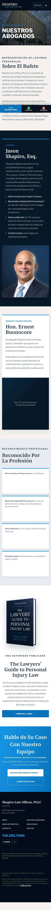
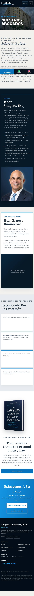
Actual before and after wording
| Before: copy-only revision 3ba90d9 | After: approved design restored | ||||
|---|---|---|---|---|---|
| n | n | 1 | Shapiro Law Offices, PLLC | ||
| 1 | Nuestros Abogados | 2 | Nuestros Abogados | ||
| n | n | 3 | Inicio | ||
| 4 | Inicio | ||||
| 5 | Nuestros Abogados | ||||
| 6 | Representación de Lesiones Personales | ||||
| 2 | Sobre El Bufete | 7 | Sobre El Bufete | ||
| 3 | Shapiro Law Offices, PLLC es un bufete de lesiones personales de | 8 | Shapiro Law Offices, PLLC es un bufete de lesiones personales de | ||
| > | dicado a representar a víctimas de accidentes. Fundado por Jason | > | dicado a representar a víctimas de accidentes. Fundado por Jason | ||
| > | Shapiro, los abogados del bufete llevan casos a juicio — entre | > | Shapiro, los abogados del bufete llevan casos a juicio — entre | ||
| > | ambos han manejado casos de accidentes multimillonarios en tribu | > | ambos han manejado casos de accidentes multimillonarios en tribu | ||
| > | nales estatales y federales durante décadas. | > | nales estatales y federales durante décadas. | ||
| 4 | El bufete se enfoca en todas las áreas de accidentes — accidente | 9 | El bufete se enfoca en todas las áreas de accidentes — accidente | ||
| > | s de andamios y construcción, accidentes de vehículos motorizado | > | s de andamios y construcción, accidentes de vehículos motorizado | ||
| > | s, accidentes en propiedades y negligencia médica — sirviendo a | > | s, accidentes en propiedades y negligencia médica — sirviendo a | ||
| > | clientes en los condados de Bronx, Nueva York, Queens, Kings, We | > | clientes en los condados de Bronx, Nueva York, Queens, Kings, We | ||
| > | stchester, Nassau, Richmond y Rockland. | > | stchester, Nassau, Richmond y Rockland. | ||
| n | n | 10 | Fundador | ||
| 5 | Jason Shapiro, Esq | 11 | Jason Shapiro, Esq | ||
| n | 6 | Fundador | n | ||
| 7 | Abogado litigante educado en una universidad de la Ivy League, c | 12 | Abogado litigante educado en una universidad de la Ivy League, c | ||
| > | onferencista y autor del libro de texto The Lawyers’ Guide to Pe | > | onferencista y autor del libro de texto The Lawyers’ Guide to Pe | ||
| > | rsonal Injury Law (Guía del Abogado sobre la Ley de Lesiones Per | > | rsonal Injury Law (Guía del Abogado sobre la Ley de Lesiones Per | ||
| > | sonales). Representa a víctimas de accidentes en El Bronx y toda | > | sonales). Representa a víctimas de accidentes en El Bronx y toda | ||
| > | la ciudad de Nueva York. | > | la ciudad de Nueva York. | ||
| 8 | Seleccionado para Super Lawyers. | 13 | Seleccionado para Super Lawyers. | ||
| 10 | Autor publicado — The Lawyers’ Guide to Personal Injury Law, un | 15 | Autor publicado — The Lawyers’ Guide to Personal Injury Law, un | ||
| > | libro de texto integral que analiza, en profundidad, el manejo d | > | libro de texto integral que analiza, en profundidad, el manejo d | ||
| > | e todo tipo de casos de accidentes y lesiones. | > | e todo tipo de casos de accidentes y lesiones. | ||
| 11 | Conferencista sobre litigios de lesiones personales. | 16 | Conferencista sobre litigios de lesiones personales. | ||
| n | n | 17 | Abogado Litigante Principal | ||
| 18 | Hon. Ernest Buonocore | ||||
| 19 | Un abogado litigante experimentado, exjuez y mediador que aporta | ||||
| > | una perspectiva distintiva a casos graves de lesiones personale | ||||
| > | s. | ||||
| 20 | El juez Buonocore trabaja directamente con los clientes y aplica | ||||
| > | décadas de criterio judicial, experiencia en juicios y perspect | ||||
| > | iva de apelación a cada asunto. | ||||
| 21 | Reconocimiento Profesional | ||||
| 12 | Reconocido Por La Profesión | 22 | Reconocido Por La Profesión | ||
| 13 | Seleccionado para Super Lawyers — Jason Shapiro. | 23 | Seleccionado para Super Lawyers — Jason Shapiro. | ||
| n | n | 24 | Martindale-Hubbell AV Preeminent® , la más alta calificación ent | ||
| > | re colegas por capacidad legal y ética profesional. | ||||
| 14 | Autor publicado — The Lawyers’ Guide to Personal Injury Law. | 25 | Autor publicado — The Lawyers’ Guide to Personal Injury Law. | ||
| 15 | Se habla español — el bufete atiende a sus clientes en inglés y | 26 | Se habla español — el bufete atiende a sus clientes en inglés y | ||
| > | español. | > | español. | ||
| n | n | 27 | |||
| 28 | Una Autoridad Publicada | ||||
| 16 | The Lawyers’ Guide to Personal Injury Law | 29 | The Lawyers’ Guide to Personal Injury Law | ||
| 17 | Escrito por Jason Shapiro, este es un libro de texto integral pa | 30 | Escrito por Jason Shapiro, este es un libro de texto integral pa | ||
| > | ra abogados de lesiones personales. El libro analiza, en profund | > | ra abogados de lesiones personales. El libro analiza, en profund | ||
| > | idad, el manejo de todo tipo de casos de accidentes y lesiones. | > | idad, el manejo de todo tipo de casos de accidentes y lesiones. | ||
| 18 | Comprar El Libro | 31 | Comprar El Libro | ||
| t | t | 32 | Estaremos A Su Lado. | ||
| 33 | Llame ahora para hablar con un abogado — la consulta es gratis | ||||
| 34 | Reserve Su Consulta Gratis | ||||
| 35 | Llame 718.295.7000 | ||||
Every source entry and its result
| Document paragraph | Role | Exact source text | Result |
|---|---|---|---|
| 785 | Page title (browser tab) | Nuestros Abogados | Lesiones Personales en Nueva York - Shapiro Law Offices, PLLC | Exact |
| 787 | Search-results description | Conozca a los abogados de Shapiro Law Offices, PLLC en Nueva York - el fundador Jason Shapiro, Esq., abogado litigante, conferencista y autor publicado. | Exact |
| 789 | Section heading | Sobre El Bufete | Exact |
| 791 | Paragraph | Shapiro Law Offices, PLLC es un bufete de lesiones personales dedicado a representar a víctimas de accidentes. Fundado por Jason Shapiro, los abogados del bufete llevan casos a juicio — entre ambos han manejado casos de accidentes multimillonarios en tribunales estatales y federales durante décadas. | Exact |
| 793 | Paragraph | El bufete se enfoca en todas las áreas de accidentes — accidentes de andamios y construcción, accidentes de vehículos motorizados, accidentes en propiedades y negligencia médica — sirviendo a clientes en los condados de Bronx, Nueva York, Queens, Kings, Westchester, Nassau, Richmond y Rockland. | Exact |
| 795 | Heading | Jason Shapiro, Esq | Exact |
| 797 | Paragraph | Fundador | Exact |
| 799 | Paragraph | Abogado litigante educado en una universidad de la Ivy League, conferencista y autor del libro de texto The Lawyers’ Guide to Personal Injury Law (Guía del Abogado sobre la Ley de Lesiones Personales). Representa a víctimas de accidentes en El Bronx y toda la ciudad de Nueva York. | Exact |
| 801 | List item | Seleccionado para Super Lawyers. | Exact |
| 803 | List item | Martindale-Hubbell AV Preeminent® — la más alta calificación entre colegas por capacidad legal y ética profesional. | Exact |
| 805 | List item | Autor publicado — The Lawyers’ Guide to Personal Injury Law, un libro de texto integral que analiza, en profundidad, el manejo de todo tipo de casos de accidentes y lesiones. | Exact |
| 807 | List item | Conferencista sobre litigios de lesiones personales. | Exact |
| 809 | Image description | Jason Shapiro, Esq. — fundador de Shapiro Law Offices, PLLC | Exact |
| 819 | Heading | Reconocido Por La Profesión | Exact |
| 821 | List item | Seleccionado para Super Lawyers — Jason Shapiro. | Exact |
| 823 | List item | Autor publicado — The Lawyers’ Guide to Personal Injury Law. | Exact |
| 825 | List item | Se habla español — el bufete atiende a sus clientes en inglés y español. | Exact |
| 827 | Image description | La Guía de los Abogados para el Derecho de Lesiones Personales, por Jason Shapiro, Esq. | Exact |
| 829 | Heading | The Lawyers’ Guide to Personal Injury Law | Exact |
| 831 | Paragraph | Escrito por Jason Shapiro, este es un libro de texto integral para abogados de lesiones personales. El libro analiza, en profundidad, el manejo de todo tipo de casos de accidentes y lesiones. | Exact |
| 833 | Button | Comprar El Libro | Exact |
| 553 | Paragraph | Llame para una Consulta Gratis | Exact |
| 555 | Paragraph | Síganos : | Exact |
| 557 | List item | Contacto | Exact |
| 559 | Button | Reserve Su Consulta Gratis | Exact |
| 561 | Section heading | Estaremos A Su Lado. | Exact |
| 563 | Small heading | ¡No Paga Si No Ganamos! | Exact |
| 565 | Paragraph | Llame ahora para hablar con un abogado — la consulta es gratis | Exact |
| 567 | Button | Llame 718.295.7000 | Exact |
| 569 | Heading | Ubicación | Exact |
| 571 | Paragraph | 3205 Grand Concourse, Suite 1 Bronx, NY 10468 | Exact |
| 573 | Paragraph | Shapiro Law Offices, PLLC sirve a clientes en los condados de Bronx, Nueva York, Queens, Kings, Westchester, Nassau, Richmond y Rockland. | Exact |
| 575 | Paragraph | 718.295.7000 | Exact |
| 577 | Paragraph | Copyright © 2026 - Shapiro Law Offices, PLLC • Todos Los Derechos Reservados. | Exact |
| 579 | Paragraph | Attorney Advertising (Publicidad de Abogados). Los resultados anteriores no garantizan un resultado similar. La información presentada en este sitio no debe interpretarse como asesoramiento legal formal ni como la formación de una relación abogado-cliente. Créditos de fotos. | Exact |
es/practice-areas.html
50 source entries match exactly. 0 older result entries are superseded by the newer approved figures.
Desktop screenshots
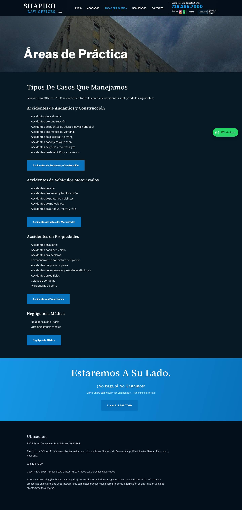
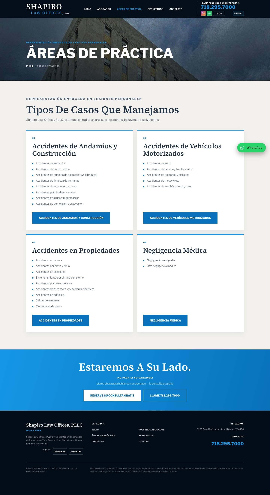
Mobile screenshots
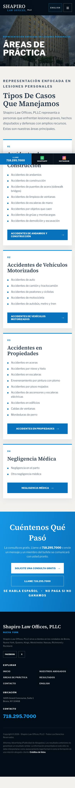
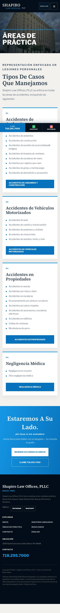
Actual before and after wording
| Before: copy-only revision 3ba90d9 | After: approved design restored | ||||
|---|---|---|---|---|---|
| n | n | 1 | Representación Enfocada en Lesiones Personales | ||
| 1 | Áreas de Práctica | 2 | Áreas de Práctica | ||
| n | n | 3 | Inicio | ||
| 4 | Inicio | ||||
| 5 | Áreas de Práctica | ||||
| 6 | Representación Enfocada en Lesiones Personales | ||||
| 2 | Tipos De Casos Que Manejamos | 7 | Tipos De Casos Que Manejamos | ||
| 3 | Shapiro Law Offices, PLLC se enfoca en todas las áreas de accide | 8 | Shapiro Law Offices, PLLC se enfoca en todas las áreas de accide | ||
| > | ntes, incluyendo las siguientes: | > | ntes, incluyendo las siguientes: | ||
| 34 | Otra negligencia médica | 39 | Otra negligencia médica | ||
| 35 | Negligencia Médica | 40 | Negligencia Médica | ||
| t | t | 41 | Estaremos A Su Lado. | ||
| 42 | Llame ahora para hablar con un abogado — la consulta es gratis | ||||
| 43 | Reserve Su Consulta Gratis | ||||
| 44 | Llame 718.295.7000 | ||||
Every source entry and its result
| Document paragraph | Role | Exact source text | Result |
|---|---|---|---|
| 838 | Page title (browser tab) | Áreas de Práctica | Shapiro Law Offices, PLLC - Bronx, NY | Exact |
| 840 | Search-results description | Accidentes de andamios y construcción, vehículos motorizados, propiedades y negligencia médica - Shapiro Law Offices, PLLC representa a víctimas de lesiones en El Bronx y toda la ciudad de Nueva York. | Exact |
| 842 | Section heading | Tipos De Casos Que Manejamos | Exact |
| 844 | Paragraph | Shapiro Law Offices, PLLC se enfoca en todas las áreas de accidentes, incluyendo las siguientes: | Exact |
| 846 | Heading | Accidentes de Andamios y Construcción | Exact |
| 848 | List item | Accidentes de andamios | Exact |
| 850 | List item | Accidentes de construcción | Exact |
| 852 | List item | Accidentes de puentes de acera (sidewalk bridges) | Exact |
| 854 | List item | Accidentes de limpieza de ventanas | Exact |
| 856 | List item | Accidentes de escaleras de mano | Exact |
| 858 | List item | Accidentes por objetos que caen | Exact |
| 860 | List item | Accidentes de grúas y montacargas | Exact |
| 862 | List item | Accidentes de demolición y excavación | Exact |
| 864 | Button | Accidentes de Andamios y Construcción | Exact |
| 866 | Heading | Accidentes de Vehículos Motorizados | Exact |
| 868 | List item | Accidentes de auto | Exact |
| 870 | List item | Accidentes de camión y tractocamión | Exact |
| 872 | List item | Accidentes de peatones y ciclistas | Exact |
| 874 | List item | Accidentes de motocicleta | Exact |
| 876 | List item | Accidentes de autobús, metro y tren | Exact |
| 878 | Button | Accidentes de Vehículos Motorizados | Exact |
| 880 | Heading | Accidentes en Propiedades | Exact |
| 882 | List item | Accidentes en aceras | Exact |
| 884 | List item | Accidentes por nieve y hielo | Exact |
| 886 | List item | Accidentes en escaleras | Exact |
| 888 | List item | Envenenamiento por pintura con plomo | Exact |
| 890 | List item | Accidentes por pisos mojados | Exact |
| 892 | List item | Accidentes de ascensores y escaleras eléctricas | Exact |
| 894 | List item | Accidentes en edificios | Exact |
| 896 | List item | Caídas de ventanas | Exact |
| 898 | List item | Mordeduras de perro | Exact |
| 900 | Button | Accidentes en Propiedades | Exact |
| 902 | Heading | Negligencia Médica | Exact |
| 904 | List item | Negligencia en el parto | Exact |
| 906 | List item | Otra negligencia médica | Exact |
| 908 | Button | Negligencia Médica | Exact |
| 553 | Paragraph | Llame para una Consulta Gratis | Exact |
| 555 | Paragraph | Síganos : | Exact |
| 557 | List item | Contacto | Exact |
| 559 | Button | Reserve Su Consulta Gratis | Exact |
| 561 | Section heading | Estaremos A Su Lado. | Exact |
| 563 | Small heading | ¡No Paga Si No Ganamos! | Exact |
| 565 | Paragraph | Llame ahora para hablar con un abogado — la consulta es gratis | Exact |
| 567 | Button | Llame 718.295.7000 | Exact |
| 569 | Heading | Ubicación | Exact |
| 571 | Paragraph | 3205 Grand Concourse, Suite 1 Bronx, NY 10468 | Exact |
| 573 | Paragraph | Shapiro Law Offices, PLLC sirve a clientes en los condados de Bronx, Nueva York, Queens, Kings, Westchester, Nassau, Richmond y Rockland. | Exact |
| 575 | Paragraph | 718.295.7000 | Exact |
| 577 | Paragraph | Copyright © 2026 - Shapiro Law Offices, PLLC • Todos Los Derechos Reservados. | Exact |
| 579 | Paragraph | Attorney Advertising (Publicidad de Abogados). Los resultados anteriores no garantizan un resultado similar. La información presentada en este sitio no debe interpretarse como asesoramiento legal formal ni como la formación de una relación abogado-cliente. Créditos de fotos. | Exact |
es/practice-areas/construction-scaffold.html
28 source entries match exactly. 0 older result entries are superseded by the newer approved figures.
Desktop screenshots
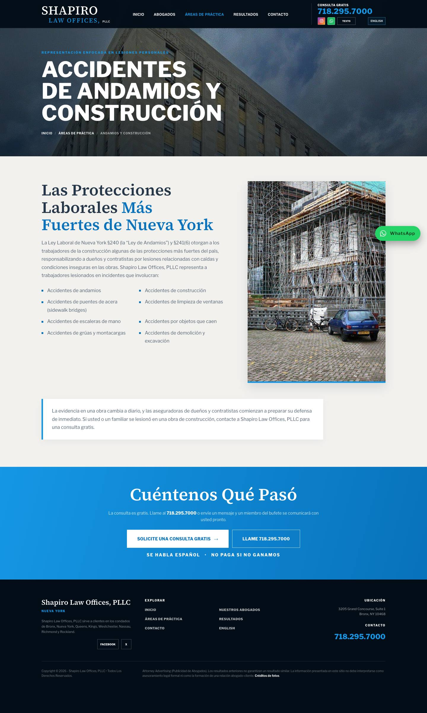
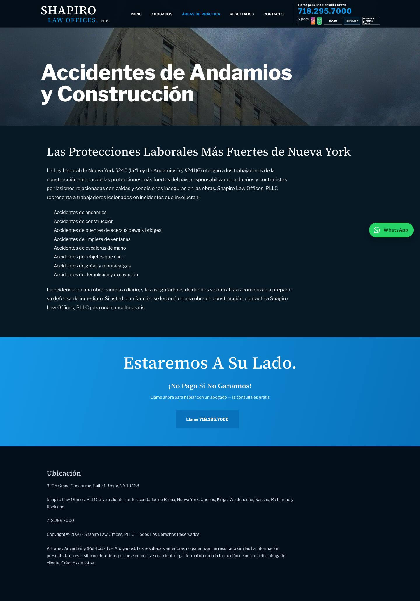
Actual before and after wording
| Before: copy-only revision 3ba90d9 | After: approved design restored | ||||
|---|---|---|---|---|---|
| n | n | 1 | Representación Enfocada en Lesiones Personales | ||
| 1 | Accidentes de Andamios y Construcción | 2 | Accidentes de Andamios y Construcción | ||
| n | n | 3 | Inicio | ||
| 4 | Inicio | ||||
| 5 | Áreas de Práctica | ||||
| 6 | Áreas de Práctica | ||||
| 7 | Andamios y Construcción | ||||
| 2 | Las Protecciones Laborales Más Fuertes de Nueva York | 8 | Las Protecciones Laborales Más Fuertes de Nueva York | ||
| 3 | La Ley Laboral de Nueva York §240 (la “Ley de Andamios”) y §241( | 9 | La Ley Laboral de Nueva York §240 (la “Ley de Andamios”) y §241( | ||
| > | 6) otorgan a los trabajadores de la construcción algunas de las | > | 6) otorgan a los trabajadores de la construcción algunas de las | ||
| > | protecciones más fuertes del país, responsabilizando a dueños y | > | protecciones más fuertes del país, responsabilizando a dueños y | ||
| > | contratistas por lesiones relacionadas con caídas y condiciones | > | contratistas por lesiones relacionadas con caídas y condiciones | ||
| > | inseguras en las obras. Shapiro Law Offices, PLLC representa a t | > | inseguras en las obras. Shapiro Law Offices, PLLC representa a t | ||
| > | rabajadores lesionados en incidentes que involucran: | > | rabajadores lesionados en incidentes que involucran: | ||
| 11 | Accidentes de demolición y excavación | 17 | Accidentes de demolición y excavación | ||
| 12 | La evidencia en una obra cambia a diario, y las aseguradoras de | 18 | La evidencia en una obra cambia a diario, y las aseguradoras de | ||
| > | dueños y contratistas comienzan a preparar su defensa de inmedia | > | dueños y contratistas comienzan a preparar su defensa de inmedia | ||
| > | to. Si usted o un familiar se lesionó en una obra de construcció | > | to. Si usted o un familiar se lesionó en una obra de construcció | ||
| > | n, contacte a Shapiro Law Offices, PLLC para una consulta gratis | > | n, contacte a Shapiro Law Offices, PLLC para una consulta gratis | ||
| > | . | > | . | ||
| t | t | 19 | Estaremos A Su Lado. | ||
| 20 | Llame ahora para hablar con un abogado — la consulta es gratis | ||||
| 21 | Reserve Su Consulta Gratis | ||||
| 22 | Llame 718.295.7000 | ||||
Every source entry and its result
| Document paragraph | Role | Exact source text | Result |
|---|---|---|---|
| 913 | Page title (browser tab) | Abogado de Accidentes de Andamios y Construcción en Nueva York | Shapiro Law Offices, PLLC | Exact |
| 915 | Search-results description | La Ley Laboral de Nueva York protege a los trabajadores de la construcción lesionados en caídas de andamios, escaleras, objetos que caen y más. Consulta gratis: 718.295.7000. | Exact |
| 917 | Main headline | Accidentes de Andamios y Construcción | Exact |
| 919 | Section heading | Las Protecciones Laborales Más Fuertes de Nueva York | Exact |
| 921 | Paragraph | La Ley Laboral de Nueva York §240 (la “Ley de Andamios”) y §241(6) otorgan a los trabajadores de la construcción algunas de las protecciones más fuertes del país, responsabilizando a dueños y contratistas por lesiones relacionadas con caídas y condiciones inseguras en las obras. Shapiro Law Offices, PLLC representa a trabajadores lesionados en incidentes que involucran: | Exact |
| 923 | List item | Accidentes de andamios | Exact |
| 925 | List item | Accidentes de construcción | Exact |
| 927 | List item | Accidentes de puentes de acera (sidewalk bridges) | Exact |
| 929 | List item | Accidentes de limpieza de ventanas | Exact |
| 931 | List item | Accidentes de escaleras de mano | Exact |
| 933 | List item | Accidentes por objetos que caen | Exact |
| 935 | List item | Accidentes de grúas y montacargas | Exact |
| 937 | List item | Accidentes de demolición y excavación | Exact |
| 939 | Paragraph | La evidencia en una obra cambia a diario, y las aseguradoras de dueños y contratistas comienzan a preparar su defensa de inmediato. Si usted o un familiar se lesionó en una obra de construcción, contacte a Shapiro Law Offices, PLLC para una consulta gratis. | Exact |
| 553 | Paragraph | Llame para una Consulta Gratis | Exact |
| 555 | Paragraph | Síganos : | Exact |
| 557 | List item | Contacto | Exact |
| 559 | Button | Reserve Su Consulta Gratis | Exact |
| 561 | Section heading | Estaremos A Su Lado. | Exact |
| 563 | Small heading | ¡No Paga Si No Ganamos! | Exact |
| 565 | Paragraph | Llame ahora para hablar con un abogado — la consulta es gratis | Exact |
| 567 | Button | Llame 718.295.7000 | Exact |
| 569 | Heading | Ubicación | Exact |
| 571 | Paragraph | 3205 Grand Concourse, Suite 1 Bronx, NY 10468 | Exact |
| 573 | Paragraph | Shapiro Law Offices, PLLC sirve a clientes en los condados de Bronx, Nueva York, Queens, Kings, Westchester, Nassau, Richmond y Rockland. | Exact |
| 575 | Paragraph | 718.295.7000 | Exact |
| 577 | Paragraph | Copyright © 2026 - Shapiro Law Offices, PLLC • Todos Los Derechos Reservados. | Exact |
| 579 | Paragraph | Attorney Advertising (Publicidad de Abogados). Los resultados anteriores no garantizan un resultado similar. La información presentada en este sitio no debe interpretarse como asesoramiento legal formal ni como la formación de una relación abogado-cliente. Créditos de fotos. | Exact |
es/practice-areas/motor-vehicle.html
25 source entries match exactly. 0 older result entries are superseded by the newer approved figures.

Mobile screenshots
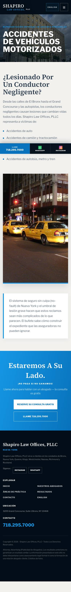
Actual before and after wording
| Before: copy-only revision 3ba90d9 | After: approved design restored | ||||
|---|---|---|---|---|---|
| n | n | 1 | Representación Enfocada en Lesiones Personales | ||
| 1 | Accidentes de Vehículos Motorizados | 2 | Accidentes de Vehículos Motorizados | ||
| n | n | 3 | Inicio | ||
| 4 | Inicio | ||||
| 5 | Áreas de Práctica | ||||
| 6 | Áreas de Práctica | ||||
| 7 | Accidentes de Vehículos | ||||
| 2 | ¿Lesionado Por Un Conductor Negligente? | 8 | ¿Lesionado Por Un Conductor Negligente? | ||
| 3 | Desde las calles de El Bronx hasta el Grand Concourse y las auto | 9 | Desde las calles de El Bronx hasta el Grand Concourse y las auto | ||
| > | pistas, los conductores negligentes causan lesiones que cambian | > | pistas, los conductores negligentes causan lesiones que cambian | ||
| > | vidas todos los días. Shapiro Law Offices, PLLC representa a víc | > | vidas todos los días. Shapiro Law Offices, PLLC representa a víc | ||
| > | timas de: | > | timas de: | ||
| 8 | Accidentes de autobús, metro y tren | 14 | Accidentes de autobús, metro y tren | ||
| 9 | El sistema de seguro sin culpa (no-fault) de Nueva York y el umb | 15 | El sistema de seguro sin culpa (no-fault) de Nueva York y el umb | ||
| > | ral de lesión grave hacen que estos reclamos sean más complicado | > | ral de lesión grave hacen que estos reclamos sean más complicado | ||
| > | s de lo que parecen. El bufete sabe cómo construir el expediente | > | s de lo que parecen. El bufete sabe cómo construir el expediente | ||
| > | que las aseguradoras no pueden ignorar. | > | que las aseguradoras no pueden ignorar. | ||
| t | t | 16 | Estaremos A Su Lado. | ||
| 17 | Llame ahora para hablar con un abogado — la consulta es gratis | ||||
| 18 | Reserve Su Consulta Gratis | ||||
| 19 | Llame 718.295.7000 | ||||
Every source entry and its result
| Document paragraph | Role | Exact source text | Result |
|---|---|---|---|
| 944 | Page title (browser tab) | Abogado de Accidentes de Vehículos en Nueva York | Shapiro Law Offices, PLLC | Exact |
| 946 | Search-results description | Representamos a conductores, pasajeros, peatones, ciclistas y pasajeros del transporte público lesionados en accidentes en NYC. Consulta gratis: 718.295.7000. | Exact |
| 948 | Main headline | Accidentes de Vehículos Motorizados | Exact |
| 950 | Section heading | ¿Lesionado Por Un Conductor Negligente? | Exact |
| 952 | Paragraph | Desde las calles de El Bronx hasta el Grand Concourse y las autopistas, los conductores negligentes causan lesiones que cambian vidas todos los días. Shapiro Law Offices, PLLC representa a víctimas de: | Exact |
| 954 | List item | Accidentes de auto | Exact |
| 956 | List item | Accidentes de camión y tractocamión | Exact |
| 958 | List item | Accidentes de peatones y ciclistas | Exact |
| 960 | List item | Accidentes de motocicleta | Exact |
| 962 | List item | Accidentes de autobús, metro y tren | Exact |
| 964 | Paragraph | El sistema de seguro sin culpa (no-fault) de Nueva York y el umbral de lesión grave hacen que estos reclamos sean más complicados de lo que parecen. El bufete sabe cómo construir el expediente que las aseguradoras no pueden ignorar. | Exact |
| 553 | Paragraph | Llame para una Consulta Gratis | Exact |
| 555 | Paragraph | Síganos : | Exact |
| 557 | List item | Contacto | Exact |
| 559 | Button | Reserve Su Consulta Gratis | Exact |
| 561 | Section heading | Estaremos A Su Lado. | Exact |
| 563 | Small heading | ¡No Paga Si No Ganamos! | Exact |
| 565 | Paragraph | Llame ahora para hablar con un abogado — la consulta es gratis | Exact |
| 567 | Button | Llame 718.295.7000 | Exact |
| 569 | Heading | Ubicación | Exact |
| 571 | Paragraph | 3205 Grand Concourse, Suite 1 Bronx, NY 10468 | Exact |
| 573 | Paragraph | Shapiro Law Offices, PLLC sirve a clientes en los condados de Bronx, Nueva York, Queens, Kings, Westchester, Nassau, Richmond y Rockland. | Exact |
| 575 | Paragraph | 718.295.7000 | Exact |
| 577 | Paragraph | Copyright © 2026 - Shapiro Law Offices, PLLC • Todos Los Derechos Reservados. | Exact |
| 579 | Paragraph | Attorney Advertising (Publicidad de Abogados). Los resultados anteriores no garantizan un resultado similar. La información presentada en este sitio no debe interpretarse como asesoramiento legal formal ni como la formación de una relación abogado-cliente. Créditos de fotos. | Exact |
es/practice-areas/premises.html
29 source entries match exactly. 0 older result entries are superseded by the newer approved figures.
Desktop screenshots
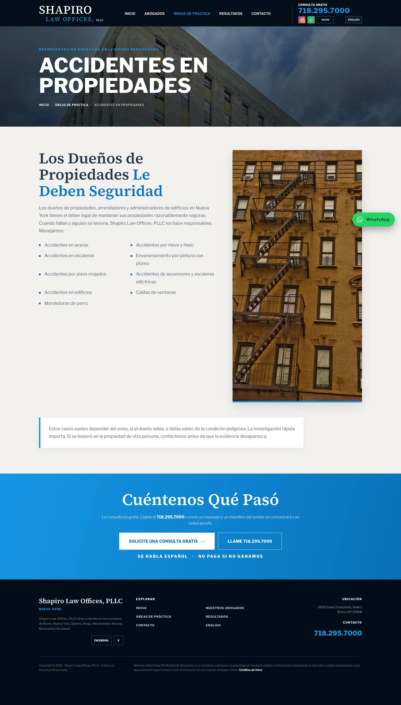
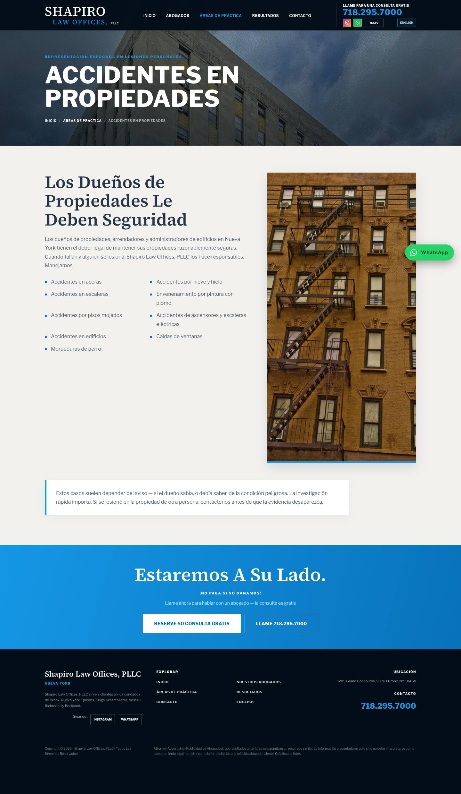

Actual before and after wording
| Before: copy-only revision 3ba90d9 | After: approved design restored | ||||
|---|---|---|---|---|---|
| n | n | 1 | Representación Enfocada en Lesiones Personales | ||
| 2 | Accidentes en Propiedades | ||||
| 3 | Inicio | ||||
| 4 | Inicio | ||||
| 5 | Áreas de Práctica | ||||
| 6 | Áreas de Práctica | ||||
| 1 | Accidentes en Propiedades | 7 | Accidentes en Propiedades | ||
| 2 | Los Dueños de Propiedades Le Deben Seguridad | 8 | Los Dueños de Propiedades Le Deben Seguridad | ||
| 12 | Mordeduras de perro | 18 | Mordeduras de perro | ||
| 13 | Estos casos suelen depender del aviso — si el dueño sabía, o deb | 19 | Estos casos suelen depender del aviso — si el dueño sabía, o deb | ||
| > | ía saber, de la condición peligrosa. La investigación rápida imp | > | ía saber, de la condición peligrosa. La investigación rápida imp | ||
| > | orta. Si se lesionó en la propiedad de otra persona, contáctenos | > | orta. Si se lesionó en la propiedad de otra persona, contáctenos | ||
| > | antes de que la evidencia desaparezca. | > | antes de que la evidencia desaparezca. | ||
| t | t | 20 | Estaremos A Su Lado. | ||
| 21 | Llame ahora para hablar con un abogado — la consulta es gratis | ||||
| 22 | Reserve Su Consulta Gratis | ||||
| 23 | Llame 718.295.7000 | ||||
Every source entry and its result
| Document paragraph | Role | Exact source text | Result |
|---|---|---|---|
| 969 | Page title (browser tab) | Abogado de Accidentes en Propiedades en Nueva York | Shapiro Law Offices, PLLC | Exact |
| 971 | Search-results description | Los dueños de propiedades deben mantenerlas seguras. Caídas en aceras, nieve y hielo, ascensores, mordeduras de perro y más. Consulta gratis: 718.295.7000. | Exact |
| 973 | Main headline | Accidentes en Propiedades | Exact |
| 975 | Section heading | Los Dueños de Propiedades Le Deben Seguridad | Exact |
| 977 | Paragraph | Los dueños de propiedades, arrendadores y administradores de edificios en Nueva York tienen el deber legal de mantener sus propiedades razonablemente seguras. Cuando fallan y alguien se lesiona, Shapiro Law Offices, PLLC los hace responsables. Manejamos: | Exact |
| 979 | List item | Accidentes en aceras | Exact |
| 981 | List item | Accidentes por nieve y hielo | Exact |
| 983 | List item | Accidentes en escaleras | Exact |
| 985 | List item | Envenenamiento por pintura con plomo | Exact |
| 987 | List item | Accidentes por pisos mojados | Exact |
| 989 | List item | Accidentes de ascensores y escaleras eléctricas | Exact |
| 991 | List item | Accidentes en edificios | Exact |
| 993 | List item | Caídas de ventanas | Exact |
| 995 | List item | Mordeduras de perro | Exact |
| 997 | Paragraph | Estos casos suelen depender del aviso — si el dueño sabía, o debía saber, de la condición peligrosa. La investigación rápida importa. Si se lesionó en la propiedad de otra persona, contáctenos antes de que la evidencia desaparezca. | Exact |
| 553 | Paragraph | Llame para una Consulta Gratis | Exact |
| 555 | Paragraph | Síganos : | Exact |
| 557 | List item | Contacto | Exact |
| 559 | Button | Reserve Su Consulta Gratis | Exact |
| 561 | Section heading | Estaremos A Su Lado. | Exact |
| 563 | Small heading | ¡No Paga Si No Ganamos! | Exact |
| 565 | Paragraph | Llame ahora para hablar con un abogado — la consulta es gratis | Exact |
| 567 | Button | Llame 718.295.7000 | Exact |
| 569 | Heading | Ubicación | Exact |
| 571 | Paragraph | 3205 Grand Concourse, Suite 1 Bronx, NY 10468 | Exact |
| 573 | Paragraph | Shapiro Law Offices, PLLC sirve a clientes en los condados de Bronx, Nueva York, Queens, Kings, Westchester, Nassau, Richmond y Rockland. | Exact |
| 575 | Paragraph | 718.295.7000 | Exact |
| 577 | Paragraph | Copyright © 2026 - Shapiro Law Offices, PLLC • Todos Los Derechos Reservados. | Exact |
| 579 | Paragraph | Attorney Advertising (Publicidad de Abogados). Los resultados anteriores no garantizan un resultado similar. La información presentada en este sitio no debe interpretarse como asesoramiento legal formal ni como la formación de una relación abogado-cliente. Créditos de fotos. | Exact |
es/practice-areas/medical-malpractice.html
22 source entries match exactly. 0 older result entries are superseded by the newer approved figures.
Desktop screenshots
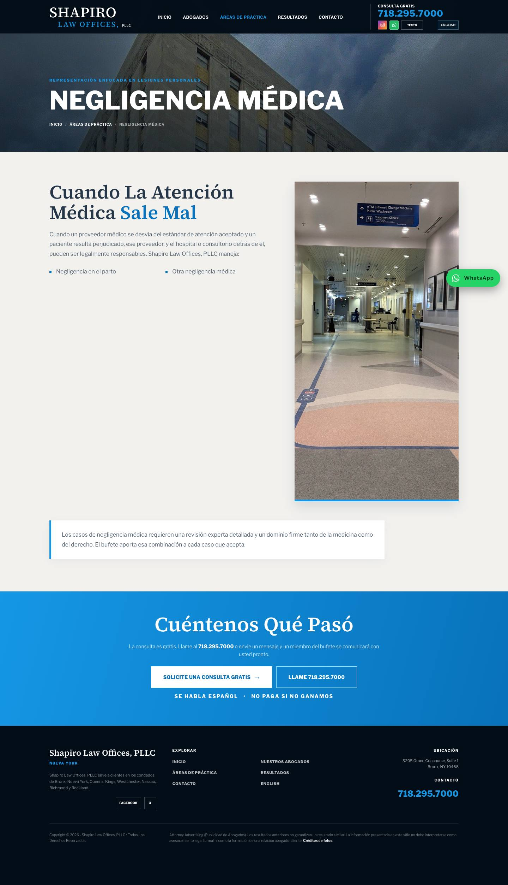
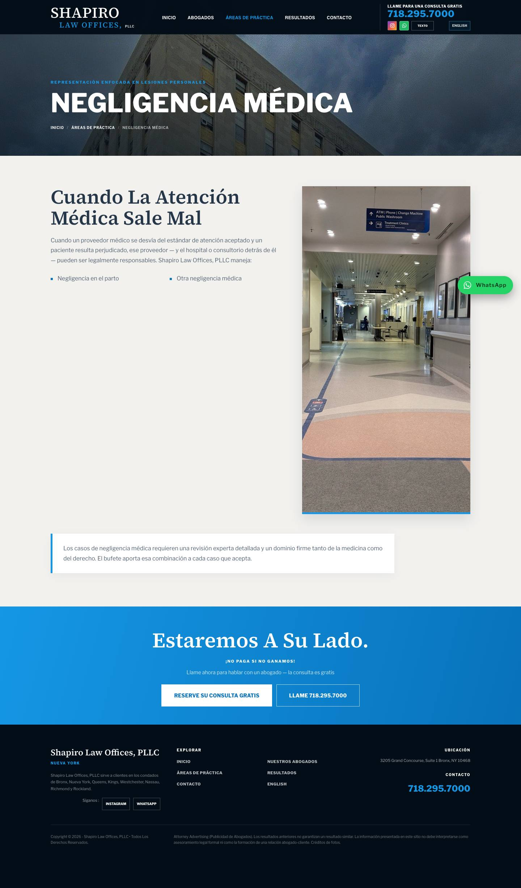
Mobile screenshots
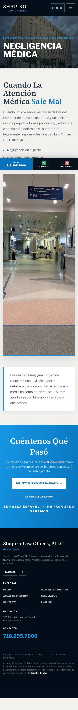
Actual before and after wording
| Before: copy-only revision 3ba90d9 | After: approved design restored | ||||
|---|---|---|---|---|---|
| n | n | 1 | Representación Enfocada en Lesiones Personales | ||
| 2 | Negligencia Médica | ||||
| 3 | Inicio | ||||
| 4 | Inicio | ||||
| 5 | Áreas de Práctica | ||||
| 6 | Áreas de Práctica | ||||
| 1 | Negligencia Médica | 7 | Negligencia Médica | ||
| 2 | Cuando La Atención Médica Sale Mal | 8 | Cuando La Atención Médica Sale Mal | ||
| 5 | Otra negligencia médica | 11 | Otra negligencia médica | ||
| 6 | Los casos de negligencia médica requieren una revisión experta d | 12 | Los casos de negligencia médica requieren una revisión experta d | ||
| > | etallada y un dominio firme tanto de la medicina como del derech | > | etallada y un dominio firme tanto de la medicina como del derech | ||
| > | o. El bufete aporta esa combinación a cada caso que acepta. | > | o. El bufete aporta esa combinación a cada caso que acepta. | ||
| t | t | 13 | Estaremos A Su Lado. | ||
| 14 | Llame ahora para hablar con un abogado — la consulta es gratis | ||||
| 15 | Reserve Su Consulta Gratis | ||||
| 16 | Llame 718.295.7000 | ||||
Every source entry and its result
| Document paragraph | Role | Exact source text | Result |
|---|---|---|---|
| 1002 | Page title (browser tab) | Abogado de Negligencia Médica en Nueva York | Shapiro Law Offices, PLLC | Exact |
| 1004 | Search-results description | Responsabilizamos a hospitales y médicos por atención negligente, incluyendo negligencia en el parto. Consulta gratis: 718.295.7000. | Exact |
| 1006 | Main headline | Negligencia Médica | Exact |
| 1008 | Section heading | Cuando La Atención Médica Sale Mal | Exact |
| 1010 | Paragraph | Cuando un proveedor médico se desvía del estándar de atención aceptado y un paciente resulta perjudicado, ese proveedor — y el hospital o consultorio detrás de él — pueden ser legalmente responsables. Shapiro Law Offices, PLLC maneja: | Exact |
| 1012 | List item | Negligencia en el parto | Exact |
| 1014 | List item | Otra negligencia médica | Exact |
| 1016 | Paragraph | Los casos de negligencia médica requieren una revisión experta detallada y un dominio firme tanto de la medicina como del derecho. El bufete aporta esa combinación a cada caso que acepta. | Exact |
| 553 | Paragraph | Llame para una Consulta Gratis | Exact |
| 555 | Paragraph | Síganos : | Exact |
| 557 | List item | Contacto | Exact |
| 559 | Button | Reserve Su Consulta Gratis | Exact |
| 561 | Section heading | Estaremos A Su Lado. | Exact |
| 563 | Small heading | ¡No Paga Si No Ganamos! | Exact |
| 565 | Paragraph | Llame ahora para hablar con un abogado — la consulta es gratis | Exact |
| 567 | Button | Llame 718.295.7000 | Exact |
| 569 | Heading | Ubicación | Exact |
| 571 | Paragraph | 3205 Grand Concourse, Suite 1 Bronx, NY 10468 | Exact |
| 573 | Paragraph | Shapiro Law Offices, PLLC sirve a clientes en los condados de Bronx, Nueva York, Queens, Kings, Westchester, Nassau, Richmond y Rockland. | Exact |
| 575 | Paragraph | 718.295.7000 | Exact |
| 577 | Paragraph | Copyright © 2026 - Shapiro Law Offices, PLLC • Todos Los Derechos Reservados. | Exact |
| 579 | Paragraph | Attorney Advertising (Publicidad de Abogados). Los resultados anteriores no garantizan un resultado similar. La información presentada en este sitio no debe interpretarse como asesoramiento legal formal ni como la formación de una relación abogado-cliente. Créditos de fotos. | Exact |
es/results.html
19 source entries match exactly. 7 older result entries are superseded by the newer approved figures.
Desktop screenshots
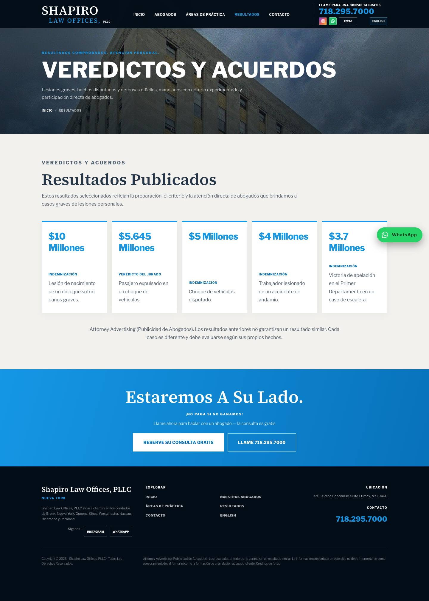

{kind=link}
{kind=link}
{kind=link}
{kind=link}
{kind=link}
{kind=link}
{kind=link}
{kind=link}
{kind=link}
{kind=link}
{kind=link}
{kind=link}
{kind=link}
{kind=link}
{kind=link}
{kind=link}
{kind=link}
{kind=link}
{kind=link}
{kind=link}
{kind=link}
{kind=link}
{kind=link}
{kind=link}
{kind=link}
{kind=link}
{kind=link}
{kind=link}
{kind=link}
{kind=link}
{kind=link}
{kind=link}
{kind=link}
{kind=link}
{kind=link}
{kind=link}
{kind=link}
{kind=link}
{kind=link}
{kind=link}
{kind=link}
{kind=link}
{kind=link}
{kind=link}
{kind=link}
{kind=link}
{kind=link}
{kind=link}
{kind=link}
{kind=link}
{kind=link}
{kind=link}
{kind=link}
{kind=link}
{kind=link}
{kind=link}
{kind=link}
{kind=link}
{kind=link}
{kind=link}
{kind=link}
{kind=link}
Actual before and after wording
| Before: copy-only revision 3ba90d9 | After: approved design restored | ||||
|---|---|---|---|---|---|
| n | n | 1 | Resultados Comprobados. Atención Personal. | ||
| 2 | Veredictos y Acuerdos | ||||
| 3 | Lesiones graves, hechos disputados y defensas difíciles, manejad | ||||
| > | os con criterio experimentado y participación directa de abogado | ||||
| > | s. | ||||
| 4 | Inicio | ||||
| 5 | Inicio | ||||
| 6 | Resultados | ||||
| 1 | Veredictos y Acuerdos | 7 | Veredictos y Acuerdos | ||
| 2 | Resultados Publicados | 8 | Resultados Publicados | ||
| n | 3 | $5,645,000 | n | 9 | Estos resultados seleccionados reflejan la preparación, el crite |
| > | rio y la atención directa de abogados que brindamos a casos grav | ||||
| > | es de lesiones personales. | ||||
| 4 | Veredicto del Jurado | 10 | Lesión de nacimiento de un niño que sufrió daños graves. | ||
| 5 | $4,000,000 | 11 | Pasajero expulsado en un choque de vehículos. | ||
| 6 | Acuerdo | 12 | Choque de vehículos disputado. | ||
| 7 | $3,000,000 | 13 | Trabajador lesionado en un accidente de andamio. | ||
| 8 | $2,500,000 | 14 | Victoria de apelación en el Primer Departamento en un caso de es | ||
| > | calera. | ||||
| 9 | $2,100,000 | ||||
| 10 | Attorney Advertising (Publicidad de Abogados). Los resultados an | 15 | Attorney Advertising (Publicidad de Abogados). Los resultados an | ||
| > | teriores no garantizan un resultado similar. Cada caso es difere | > | teriores no garantizan un resultado similar. Cada caso es difere | ||
| > | nte y debe evaluarse según sus propios hechos. | > | nte y debe evaluarse según sus propios hechos. | ||
| t | t | 16 | Estaremos A Su Lado. | ||
| 17 | Llame ahora para hablar con un abogado — la consulta es gratis | ||||
| 18 | Reserve Su Consulta Gratis | ||||
| 19 | Llame 718.295.7000 | ||||
Every source entry and its result
| Document paragraph | Role | Exact source text | Result |
|---|---|---|---|
| 1021 | Page title (browser tab) | Veredictos y Acuerdos | Shapiro Law Offices, PLLC | Exact |
| 1023 | Search-results description | Resultados reales de Shapiro Law Offices, PLLC, incluyendo un veredicto de $5,645,000 y múltiples acuerdos de siete cifras. Los resultados anteriores no garantizan un resultado similar. | Exact |
| 1025 | Main headline | Veredictos y Acuerdos | Exact |
| 1027 | Section heading | Resultados Publicados | Exact |
| 1029 | Heading | $5,645,000 | Newer approved result retained |
| 1031 | Paragraph | Veredicto del Jurado | Newer approved result retained |
| 1033 | Heading | $4,000,000 | Newer approved result retained |
| 1035 | Paragraph | Acuerdo | Newer approved result retained |
| 1037 | Heading | $3,000,000 | Newer approved result retained |
| 1039 | Heading | $2,500,000 | Newer approved result retained |
| 1041 | Heading | $2,100,000 | Newer approved result retained |
| 1043 | Paragraph | Attorney Advertising (Publicidad de Abogados). Los resultados anteriores no garantizan un resultado similar. Cada caso es diferente y debe evaluarse según sus propios hechos. | Exact |
| 553 | Paragraph | Llame para una Consulta Gratis | Exact |
| 555 | Paragraph | Síganos : | Exact |
| 557 | List item | Contacto | Exact |
| 559 | Button | Reserve Su Consulta Gratis | Exact |
| 561 | Section heading | Estaremos A Su Lado. | Exact |
| 563 | Small heading | ¡No Paga Si No Ganamos! | Exact |
| 565 | Paragraph | Llame ahora para hablar con un abogado — la consulta es gratis | Exact |
| 567 | Button | Llame 718.295.7000 | Exact |
| 569 | Heading | Ubicación | Exact |
| 571 | Paragraph | 3205 Grand Concourse, Suite 1 Bronx, NY 10468 | Exact |
| 573 | Paragraph | Shapiro Law Offices, PLLC sirve a clientes en los condados de Bronx, Nueva York, Queens, Kings, Westchester, Nassau, Richmond y Rockland. | Exact |
| 575 | Paragraph | 718.295.7000 | Exact |
| 577 | Paragraph | Copyright © 2026 - Shapiro Law Offices, PLLC • Todos Los Derechos Reservados. | Exact |
| 579 | Paragraph | Attorney Advertising (Publicidad de Abogados). Los resultados anteriores no garantizan un resultado similar. La información presentada en este sitio no debe interpretarse como asesoramiento legal formal ni como la formación de una relación abogado-cliente. Créditos de fotos. | Exact |
es/contact.html
35 source entries match exactly. 0 older result entries are superseded by the newer approved figures.
Desktop screenshots
{kind=link}
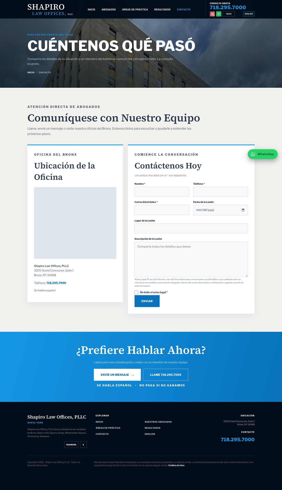
{kind=link}
Mobile screenshots
{kind=link}
{kind=link}
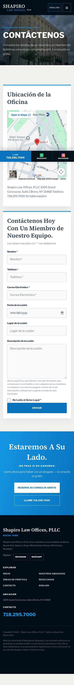
Actual before and after wording
| Before: copy-only revision 3ba90d9 | After: approved design restored | ||||
|---|---|---|---|---|---|
| n | n | 1 | Evaluación Gratis del Caso | ||
| 1 | Contáctenos | 2 | Contáctenos | ||
| n | n | 3 | Comparta los detalles de su situación y un miembro del bufete se | ||
| > | comunicará con usted pronto. La consulta es gratis. | ||||
| 4 | Inicio | ||||
| 5 | Inicio | ||||
| 6 | Contacto | ||||
| 2 | Ubicación de la Oficina | 7 | Ubicación de la Oficina | ||
| 3 | Shapiro Law Offices, PLLC 3205 Grand Concourse, Suite 1 Bronx, N | 8 | Shapiro Law Offices, PLLC 3205 Grand Concourse, Suite 1 Bronx, N | ||
| > | Y 10468 Teléfono: 718.295.7000 Se habla español | > | Y 10468 Teléfono: 718.295.7000 Se habla español | ||
| 13 | He Leído el Aviso Legal * | 18 | He Leído el Aviso Legal * | ||
| 14 | Enviar | 19 | Enviar | ||
| t | t | 20 | Estaremos A Su Lado. | ||
| 21 | Llame ahora para hablar con un abogado — la consulta es gratis | ||||
| 22 | Reserve Su Consulta Gratis | ||||
| 23 | Llame 718.295.7000 | ||||
Every source entry and its result
| Document paragraph | Role | Exact source text | Result |
|---|---|---|---|
| 1048 | Page title (browser tab) | Contáctenos | Shapiro Law Offices, PLLC - Bronx, NY | Exact |
| 1050 | Search-results description | Contacte a Shapiro Law Offices, PLLC - 3205 Grand Concourse, Suite 1, Bronx, NY 10468. Consulta gratis: 718.295.7000. | Exact |
| 1053 | Section heading | Ubicación de la Oficina | Exact |
| 1055 | Paragraph | Shapiro Law Offices, PLLC 3205 Grand Concourse, Suite 1 Bronx, NY 10468 Teléfono: 718.295.7000 Se habla español | Exact |
| 1057 | Section heading | Contáctenos Hoy Con Un Miembro de Nuestro Equipo. | Exact |
| 1059 | Paragraph | Los campos marcados con “*” son obligatorios | Exact |
| 1061 | Form label | Nombre * | Exact |
| 1063 | Form field | Nombre * | Exact |
| 1065 | Form label | Teléfono * | Exact |
| 1067 | Form field | Teléfono * | Exact |
| 1069 | Form label | Correo Electrónico * | Exact |
| 1071 | Form field | Correo Electrónico * | Exact |
| 1073 | Form label | Fecha de la Lesión | Exact |
| 1075 | Form field | Fecha de la Lesión | Exact |
| 1077 | Form label | Lugar de la Lesión | Exact |
| 1079 | Form field | Lugar de la Lesión | Exact |
| 1081 | Form label | Descripción de la Lesión | Exact |
| 1083 | Form field | Descripción de la Lesión | Exact |
| 1085 | Paragraph | Aviso Legal: El uso del internet o de este formulario para comunicarse con el bufete o con cualquiera de sus miembros no establece una relación abogado-cliente. No envíe información confidencial o urgente a través de este formulario. | Exact |
| 1087 | Form label | He Leído el Aviso Legal * | Exact |
| 1089 | Button | Enviar | Exact |
| 553 | Paragraph | Llame para una Consulta Gratis | Exact |
| 555 | Paragraph | Síganos : | Exact |
| 557 | List item | Contacto | Exact |
| 559 | Button | Reserve Su Consulta Gratis | Exact |
| 561 | Section heading | Estaremos A Su Lado. | Exact |
| 563 | Small heading | ¡No Paga Si No Ganamos! | Exact |
| 565 | Paragraph | Llame ahora para hablar con un abogado — la consulta es gratis | Exact |
| 567 | Button | Llame 718.295.7000 | Exact |
| 569 | Heading | Ubicación | Exact |
| 571 | Paragraph | 3205 Grand Concourse, Suite 1 Bronx, NY 10468 | Exact |
| 573 | Paragraph | Shapiro Law Offices, PLLC sirve a clientes en los condados de Bronx, Nueva York, Queens, Kings, Westchester, Nassau, Richmond y Rockland. | Exact |
| 575 | Paragraph | 718.295.7000 | Exact |
| 577 | Paragraph | Copyright © 2026 - Shapiro Law Offices, PLLC • Todos Los Derechos Reservados. | Exact |
| 579 | Paragraph | Attorney Advertising (Publicidad de Abogados). Los resultados anteriores no garantizan un resultado similar. La información presentada en este sitio no debe interpretarse como asesoramiento legal formal ni como la formación de una relación abogado-cliente. Créditos de fotos. | Exact |
Explicit editorial exclusions
These source entries describe unfinished profiles or reviews. They are disclosed here rather than presented as finished firm content. Document instructions, page labels, and the final asset-request checklist are also not website copy.
- index.html / paragraph 140: Second Attorney
- index.html / paragraph 142: Profile pending — name to be confirmed
- index.html / paragraph 144: [ Placeholder ] This profile is drafted and ready. Two sources give this attorney a different name, so we are not publishing either one until the firm confirms which is correct.
- index.html / paragraph 146: Jason: confirm the name and send a current biography and a photograph, and this card fills in.
- index.html / paragraph 192: Client reviews[ Google rating — pending collection ]
- index.html / paragraph 194: What People Are Saying
- index.html / paragraph 196: [ Client testimonial — pending collection ]
- index.html / paragraph 198: Real client reviews will appear here once collected and approved for publication.
- index.html / paragraph 200: View Our Reviews
- about.html / paragraph 268: Second Attorney
- about.html / paragraph 270: Profile pending — name to be confirmed
- about.html / paragraph 272: [ Placeholder ] This profile is drafted and ready to publish. It is being held back for one reason: two sources give this attorney a different name — the firm’s own Attorney Profiles page, which has not been updated since March 2023, and the notes from our website meeting on 24 July 2026. We will not publish a name, a biography or a credential we cannot confirm.
- about.html / paragraph 274: What we need from Jason: the attorney’s correct full name, a current biography, and a photograph. The profile goes live the same day it arrives.
- es/index.html / paragraph 683: Segundo Abogado
- es/index.html / paragraph 685: Perfil pendiente — nombre por confirmar
- es/index.html / paragraph 687: [ Marcador de posición ] Este perfil ya está redactado. Dos fuentes dan un nombre distinto para este abogado, así que no publicamos ninguno hasta que el bufete confirme cuál es el correcto.
- es/index.html / paragraph 689: Jason: confirme el nombre y envíe una biografía actual y una fotografía, y esta tarjeta se completa.
- es/index.html / paragraph 735: Reseñas de clientes[ Calificación de Google — pendiente ]
- es/index.html / paragraph 737: Lo Que Dice La Gente
- es/index.html / paragraph 739: [ Testimonio de cliente — pendiente de recopilación ]
- es/index.html / paragraph 741: Las reseñas reales de clientes aparecerán aquí una vez recopiladas y aprobadas para su publicación.
- es/index.html / paragraph 743: Ver Nuestras Reseñas
- es/about.html / paragraph 811: Segundo Abogado
- es/about.html / paragraph 813: Perfil pendiente — nombre por confirmar
- es/about.html / paragraph 815: [ Marcador de posición ] Este perfil ya está redactado y listo para publicarse. Se mantiene en espera por una sola razón: dos fuentes dan un nombre distinto para este abogado — la propia página Attorney Profiles del bufete, que no se actualiza desde marzo de 2023, y las notas de nuestra reunión sobre el sitio web del 24 de julio de 2026. No publicamos un nombre, una biografía ni una credencial que no podamos confirmar.
- es/about.html / paragraph 817: Lo que necesitamos de Jason: el nombre completo correcto del abogado, una biografía actual y una fotografía. El perfil se publica el mismo día en que llegue.
Exact text verification · Desktop and mobile checks · Source manifest